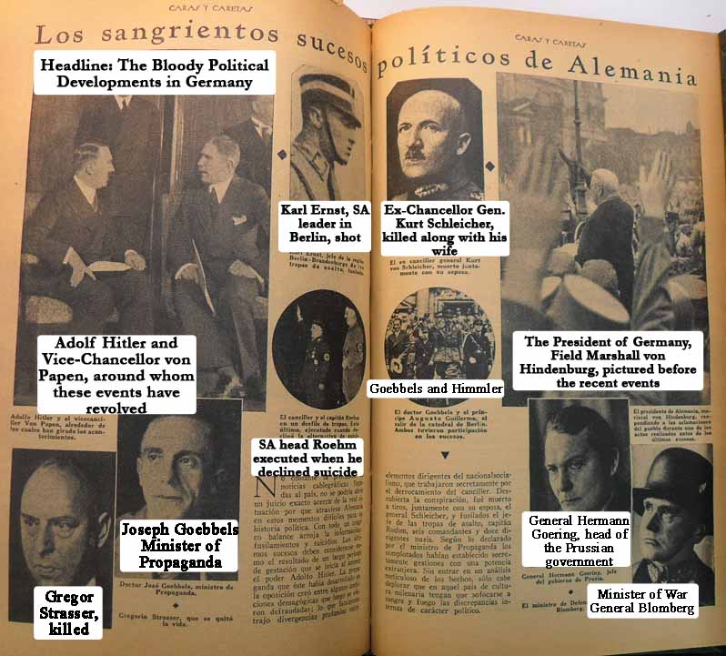
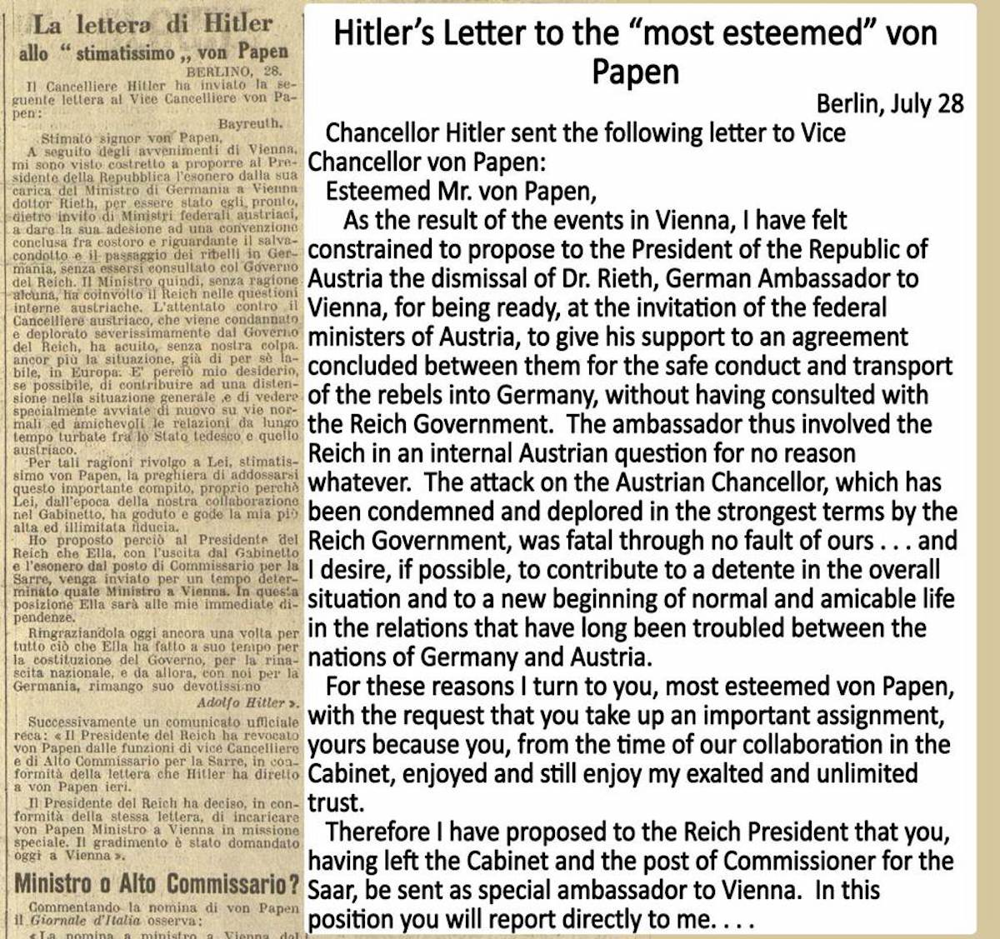
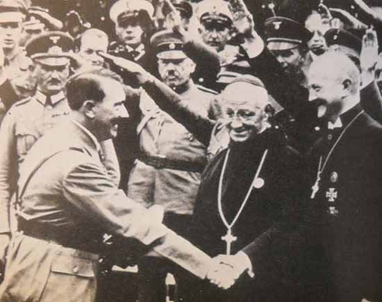

<!DOCTYPE HTML PUBLIC "-//W3C//DTD HTML 4.01 Transitional//EN" "http://www.w3.org/TR/html4/loose.dtd">
<html>

<head> <title>Swastika Blessing Investigation</title>
<link rel="stylesheet" type="text/css" href="imystyles.css">
</head>

<body><font size="5"><h3 align="left">Notes to Part I Chapter 2</h3><hr align="left" width="200" noshade><br>


<a name="one"></a><p><u>Vatican Archives</u>:  Selected contents of the Vatican Secret Archives are opened to historians from time to time.  For the pontificate of Pius XI (1922-1939), the official files of the Vatican Secretariat of State have been opened with respect to communiqués between the Vatican and the Nuncios in Berlin and Munich, as well as Nuncios in some other countries.  We cite various historical works that quote or cite documents from the Vatican Archives.  In addition, we have reviewed archival materials from this period that the Vatican has made available on microfilm at the U.S. Holocaust Memorial Museum in Washington, DC.</p><br>

<p>Vatican’s own daily newspaper:

<em>L’Osservatore Romano</em> (“The Roman Observer”) has been the Vatican’s newspaper since it was founded in 1861.  The main mover for its founding was Marcantonio Pacelli, the Deputy Interior Minister of the Papal States and the grandfather of Eugenio Pacelli (Pope Pius XII).
   <p>A description of its origin and character can be found on the <a href=“http://www.vatican.va/news_services/or/ history/hi_eng.html”>Vatican’s website</a>.
   <p>The Vatican website quotes <em>L’Osservatore Romano</em>’s early self-description as "a loyal and more or less complete mirror not only of the opinions and wishes of the majority of Roman Catholics, but also of those - at least in their external and public forms - of the Pope's Government itself.” The content of <em>L’Osservatore Romano</em> is not “official” in the sense of embodying the teaching authority of the Pope, except to the extent that it publishes encyclicals and other official Vatican pronouncements.</p><br>

<a name="six"></a><p><u>Vatican-supervised semi-monthly journal</u>:  <em>Civiltà Cattolica</em> has been published since 1851 by a select group of Jesuit priests in Rome.  In a long-standing practice that dates back to the 19th century, each issue of this journal is reviewed and approved before publication by the Vatican Secretary of State.  The timing and standards of the review process are described in the Part I Chapter 2.</p><br>

<a name=”itwo08”></a><p><u>critics</u> of Pacelli (Pope Pius XII):  E.g., John Cornwell, <em>Hitler’s Pope</em> (1999); Rolf Hochhuth, <em>Der Stellvertreter</em> (1963; English version, <em>The Deputy</em>, 1964).</p><br>

<a name=”itwo10”></a><p><u>defenders</u> of Pacelli:  <em>E.g.</em>, Ronald Rychlak, <em>Hitler, the War, and the Pope</em> (2010); Michael Hesemann, <em>Der Papst, der Hitler Trotzte</em> [The Pope Who Defied Hitler] (2008).</p><br>

<a name=”itwo12”></a><p><u><em>Mit Brennender Sorge</em></u>:  This encyclical is usually referenced by its German name because, unique among papal encyclicals, it was written in German and read aloud in German from Catholic pulpits across Germany.  The title is pronounced just as it looks to English speakers for the first two words, and like “zor-guh” for the third.</p><br>

<h4>May 1934 to the Night of the Long Knives</h4>
<a name=”itwo14”></a><p><u>Vatican-Germany Concordat</u>:  Concordats are Church-State treaties between the Vatican and a nation or, in some instances, the government of a state within a federated nation, such as the states of Bavaria (1924), Prussia (1929) and Baden (1932) within the federal republic of Germany.  The Concordats between the Vatican and these three German states covered more than 90% of the Catholic population within the German Reich as of the 1920s.  Heinz Hürten, <em>Deutsche Katholiken</em> (1992).  
   <p>The Vatican entered into a Concordat with the German Reich Government on July 20, 1933, approximately half a year after Hitler came to power as the Chancellor of Germany.  The Vatican-Germany Concordat set forth mutual obligations of the German Reich Government and the Roman Catholic Church, similar in to the three state-level Concordats.  The full provisions of the Vatican-Germany Concordat can be read in its two co-equal official languages, <a href=“http://www.ibka.org/artikel/ag97/reichskonkordat.html”>German</a> and <a href=“http://www.vatican.va/roman_curia/secretariat_state/archivio/documents/rc_seg-st_19330720_santa-sede-germania_it.html”>Italian</a>, or in English translation.  Stephen Galebach has translated excerpts of the Concordat, in the Notes sections immediately below.</p><br>

<a name=”itwo15”></a><p><u>selection</u> of new German Bishops:  The Vatican-Germany Concordat applied to the entire Reich the change in the selection procedure for German Bishops which had already been instituted in Bavaria, Prussia and Baden pursuant to the three state-level Concordats.  The Pope, rather than local cathedral chapters, would henceforth select new Bishops.  The Vatican-Germany Concordat conferred on the German Government a power to object to individual Bishop selections by the Vatican, a power previously conceded to other governments, whether totalitarian (e.g., Mussolini’s Italy, 1929) or republic (<em>e.g.</em>, Poland, 1925). 
   <p>Article 14(2) of the Vatican-Germany Concordat states:  “Before the bull is issued for the appointment of Archbishops, Bishops, for a Coadjutor Bishop with right of succession, or for a Prelate with a physical jurisdiction, the name of the appointee will be communicated to the Reich Governor in the corresponding state and it will be ascertained that there are no objections of a general political nature.”
   <p>The Supplementary Protocol to Article 14(2) states:  “It is understood that when objections of a general political nature exist, they shall be presented within the shortest possible time.  If no such declaration has been presented after the passage of twenty days, the Holy See will be justified in considering that no such objections to the candidate exist.  Until publication of the appointment, the names of the persons in question will be kept in complete confidence.  This provision does not create a governmental veto right.”
<p>Note:  This translation and the following Concordat translations are made from the German version of the Concordat <em>and</em> the Italian version.  Article 34 of the Concordat states that the German and Italian versions are equally authoritative.  We have followed the general rules for treaty interpretation in such cases, which are well described in an article by Enrico Zamuner, “International Treaties Authenticated in Two or More Languages,” <a href=“http://webfolder.eurac.edu/EURAC/LexALP_shared/media/zamuner.pdf”>LexALP</a> (“When a comparison between the authentic texts reveals a discrepancy of meaning and the divergence of interpretation still persists, the interpreter has to individuate the meaning that best reconciles the texts, having regard to the object and purpose of the treaty.  As a result, it is of primary importance to give preference to an interpretation that is compatible with both texts and not an interpretation that, although compatible with one of the texts, is in contradiction with the other.  Consequently, a comparison of all authentic versions is necessary in order to find the meaning that reconciles all versions of the treaty.”)</p><br>

<a name=”itwo16”></a><p><u>oath of loyalty</u>:  The oath taken by Catholic Bishops in Germany states as follows.  “Before God and on the Holy Gospels I swear and promise, as befits a Bishop, loyalty to the German Reich and the state of _______.  I swear and promise to honor the constitutionally formed government and to cause the clergy of my diocese to honor it.  With dutiful concern for the welfare and the interest of the German State, I will endeavor, in the performance of the sacred office entrusted to me, to prevent everything injurious that could threaten it.”</p><br>

<a name=”itwo18”></a><p><u>political activity</u> of priests:  Article 32 of the Concordat provides:  
<p> “By reason of the currently existing particular circumstances in Germany, and in consideration of the guarantees created by the provisions of the foregoing Concordat for legal preservation of the rights and freedoms of the Catholic Church in the Reich and its states, the Holy See will issue instructions to exclude clergy and members of religious orders from membership in political parties and activity for such parties.”</p><br>

<a name=”itwo20”></a><p><u>Article 31</u> of Concordat:  This article states as follows. 
<blockquote>Those Catholic organizations and associations which serve exclusively religious, pure-cultural and charitable purposes, and, as such, are placed under the Church authorities, will be protected in their institutions and in their activities.
  <p>Those Catholic organizations which, in addition to religious, cultural and charitable purposes, also serve other purposes, such as social or professional tasks, shall, without prejudice to their eventual incorporation into State organizations, enjoy the protection of Article 31, paragraph 1, to the extent they provide a guarantee to conduct their activity outside all political parties.
   <p>The identification of organizations and associations that fall within the provisions of this Article remains to be agreed jointly between the Reich Government and the German episcopate.  To the extent that the Reich and the individual states take charge of athletic or other youth organizations, care will be taken that their members be enabled to regularly fulfill their religious obligations on Sundays and Holy Days, and that they not be required to do things that would not be compatible with their religious and moral convictions and obligations.</blockquote><br>

<a name=”itwo22”></a><p><u>negotiating personally</u>:  Cardinal Pacelli negotiated personally with Buttmann in Rome for multiple days in each of the following months:  October 1933, December 1933, February 1934, and April 1934.  Albrecht, <em>Note Exchange</em>, vol. 1.</p><br>

<a name=”itwo24”></a><p><u>protests</u> in diplomatic notes signed by Cardinal Pacelli:  These notes are reprinted in the original German in Albrecht, <em>Note Exchange</em>, vol. 1, pp. 164-173.  An additional note signed on June 12 by another Vatican official, not Cardinal Pacelli, protested propaganda against Cardinal Michael von Faulhaber, the Archbishop of Munich.</p><br>

<a name=”itwo26”></a><p><u>joint pastoral letter</u>:  The text of the German Bishops’ joint pastoral letter of June 1934 can be read <a href=“#pastoralletter”>here</a>.  The German Bishops had refrained from publishing the pastoral letter in June for fear of impairing the Concordat implementing negotiations that month between the three-Bishop negotiating committee and the Nazi regime.  During July and August, publication of the pastoral letter in Germany was prevented by Nazi Government authorities.</p><br> 

<a name=”itwo28”></a><p><u>role model</u>:  U.S. State Department reports from Munich as early as November 1922 observed that Hitler was called the “Bavarian Mussolini” and that Hitler’s movement gained momentum following Mussolini’s successful March on Rome in October 1922, which resulted in Mussolini coming to power as Prime Minister of Italy.  Report of Vice Consul Robert D. Murphy re Political Situation in Bavaria, Nov. 25, 1922, U.S. State Dept. files, US NARA M336, R18, pp. 256-258.
   <p>Hitler’s failed 1923 Beer Hall Putsch was intended to imitate Mussolini’s March on Rome by marching from Munich to Berlin with thousands of stormtroops. When Mussolini signed his 1929 Concordat with the Vatican, Hitler declared his on the front page of the <em>Völkischer Beobachter</em> to do the same, a goal he attained four years later.  
   <p>Following their June 1934 meetings in Italy, Hitler decided to imitate Mussolini sartorially as well.  Henceforth Hitler appeared at public events in a military uniform, like Mussolini, rather than the trench coat seen in this June 1934 photograph.</p>
<center><div class="picture center" style="width:800px;">  <br />Hitler and Mussolini reviewing troops June 1934</div></center><br>
 

<a name=”itwo30”></a><p><u>prominent coverage</u>:  The Italian originals can be seen in <em>Civiltà Cattolica</em>, June 14, 1934, and <em>L’Osservatore Romano</em>, June 16, 1934 and June 19, 1934.</p><br>

<a name=”itwo32”></a><p><u>warned</u> Hitler:  Wheeler-Bennett, writing shortly after the War, describes the pressure on Hitler from forces on the right in June 1934, including Hindenburg and the German Army.  <em>The Nemesis of Power</em>, pp. 315-322.  Kershaw notes the tension in June between Hitler and conservative elements in Germany, but focuses as much on Papen as on Hindenburg and the army:  “the Marburg speech served as the decisive trigger to the brutal action taken at the end of the month.” <em>Hitler, 1889-1936: Hubris</em>, p.510.  Kershaw goes on to describe Hindenburg’s message to Hitler on June 21 as a command “to bring the revolutionary trouble-makers finally to reason.”  Ibid., citing Otto Meissner, <em>Staatssecretär unter Ebert-Hindenburg-Hitler</em> [State Secretary under Ebert-Hindenburg-Hitler] (1950), p.363.
  <p>Wheeler-Bennett, who claims he had highly placed sources in mid-1930s Berlin and elsewhere, asserts that Mussolini, in his meeting with Hitler in Italy in mid-June, suggested that Hitler needed to remove Röhm from leadership of the SA.  <em>The Nemesis of Power</em>, p.318.</p><br>

<p><u>friend</u> of Hindenburg:  The friendship between the two men, going back to the First World War, was memorialized by Hindenburg in a personal note to Papen shortly after Papen resigned as German Reich Chancellor in November 1932.  Hindenburg’s words were “Ich hatt’ einen Kameraden!” The words mean “I had a comrade!”  They are also the title of a German army song.  

   <p>Papen’s military background and friendship with Hindenburg had a significant tie to America.  The outbreak of World War One in 1914 found Papen in Washington, DC, as military attaché at the German Embassy.  Papen immediately took charge of German intelligence and espionage efforts in the United States and Canada.  When he was caught by the US in 1915, expelled as <em>persona non grata</em>, and returned to Germany by ship, Papen debriefed Hindenburg.  The “Hero of Tannenberg” was impressed by Papen’s initiative in America and by his abilities as a staff officer.  
   <p>The two men hailed from two different branches of Prussian aristocracy; Hindenburg from the Protestant Junkers of northeast Prussia, Papen from the Catholic Rhineland, which had become a part of Prussia in the early 1800s.  Papen told his American interrogators after World War II that he grew up on an estate his family had owned for over a thousand years.  Papen was well enough regarded among the Prussian aristocracy to be elected President of the <em>Herrenklub</em>, the premier aristocrats’ club in Berlin, during the inter-War period.</p><br>

<a name=”itwo36”></a><p><u>reported</u>:  <em>L’Osservatore Romano</em>, June 19, 1934.</p><br>

<a name=”itwo38”></a><p><u>report</u>:  <em>Civiltà Cattolica</em>, July 20, 1934.</p><br>

<a name=”itwo39”></a><p><u>impact</u> of Papen’s speech:  John Wheeler-Bennett claims the speech was “received with favour in the world at large,” and despite Hitler’s attempts to suppress it, was received “with unfeigned joy and relief by many thousands in Germany.” <em>The Nemesis of Power</em> (New York: St. Martin’s Press, 1954), p.319.  Certainly the coverage of Papen’s speech in <em>L’Osservatore Romano</em> on June 19, 1934 was an example of a favorable reception by an internationally credible and influential newspaper.  Ian Kershaw’s more recent magisterial biography, <em>Hitler, 1889-1936: Hubris</em> (2000), observes:  “Copies of the speech were run off and circulated, both within Germany and to the foreign press.” (p.510)</p><br>

<a name=”itwo40”></a><p><u>reported</u> on page one:  Under the headline “Denial of Resignation by Von Papen,” the Vatican newspaper reported:  “There are reports that von Papen on Monday placed his government position at the disposal of Hitler, who immediately refused to consider the possibility of his leaving the government in consequence of the events of last Sunday.”  <em>L’Osservatore Romano</em>, Friday, June 22, 1934, page one.</p><br>

<a name=”itwo42”></a><p><u>Hitler met</u> with the three Bishops:  Bishop Berning took notes of the meeting of June 27, 1934, which are reprinted in the original German in Stasiewski, <em>German Bishops’ Papers</em>, vol. 1, pp. 731-732.
   <p>In translation, Bishop Berning’s notes read as follows:
   <blockquote>After the Reich Chancellor greeted us, Bishop Berning thanked him for the audience and for the opportunity for an exchange of views with the Reich Government.  He pointed out that the Bishops had placed themselves on the footing of the new State and had led the people to it, but were filled with great concern about whether the Concordat would be implemented in all its provisions.  Bishop Berning mentioned the issues of freedom for proclamation of Church teaching, legitimate defense against anti-religious attacks, the unbearable pressures on the consciences of Catholics in government-run associations due to anti-religious propaganda, the culture war [<em>Kulturkampf</em>] waged by many lower officials, the attacks on the dignity of clergy in meetings and literature, and he asked for a clear and open word from the Reich Chancellor to stop this anti-Church propaganda.  For the Catholic associations he asked for freedom in their activities and protection against attacks.  The Reich Chancellor spoke about the duties of the Party and State, whose goals are only to build a <em>Volk</em> community [<em>Volksgemeinschaft</em>] and build the State.  Any religious propaganda by the State he rejected.  State and Party should restrict themselves to their duties.  He expected the Church to discontinue all criticism of the State and the Party, and not involve itself in the political realm.  He will in all events protect the Church in its proper sphere.  As to the Hitler Youth, he admitted that too many Marxists had entered it and were influencing the spirit of the Hitler Youth, which had a shortage of suitable leaders.  That would explain many negative aspects; thus one must be patient with the Hitler Youth.     <p>Archbishop Gröber expressed his thanks to the Chancellor for his words and for his intervention for the Church.  Bishop Berning asked the Chancellor at the end for a specific instruction to the Party and the Government agencies to cease all neo-pagan propaganda.  The Chancellor agreed to this.  Also Bishop Berning asked for utmost efforts toward a compromise agreement on the question of Catholic associations.</blockquote>
<p>Source:  Stasiewski, <em>German Bishops’ Papers</em>, vol. 1, pp. 731-732.</p><br>

<a name=”itwo43”></a><p><u>Catholic Action</u>:  Catholic Action was implemented later in Germany, and to a lesser extent, than in many other Catholic countries.  According to a letter written by Cardinal Faulhaber in 1928, parish priests did not feel a need for Catholic Action, because there were so many active Catholic associations in virtually every parish in Germany.  Priests had little desire to add a group competing with the existing ones, nor to superimpose Catholic Action as a superior or umbrella group over the others.  Cardinal Pacelli attempted to jump-start Catholic Action in 1928, by focusing the annual German Catholic Congress on that objective and inviting only selected leaders rather than the typical large attendance of Catholics.  According to papal historian Josef Schmidlin, however, even with Pacelli’s efforts at the 1928 Catholic Congress in Magdeburg, “the spontaneous vitality and apparently guarded manner of German forms of social action (especially popular associations and trade unions) had the effect that Catholic Action on German soil remained a dead letter on paper.”  Josef Schmidlin, <em>Papstgeschichte der Neuesten Zeit</em> [Papal History of Recent Times] (1939), p.73.
  <p>The negotiated agreement of June 29, 1934, which followed the negotiating position Cardinal Pacelli had staked out beginning in 1933, would have instantly invigorated Catholic Action by incorporating all Catholic associations or their assets into Catholic Action.
   <p>Here is Cardinal Faulhaber’s letter of March 20, 1928 to Prince Löwenstein about Catholic Action:
<blockquote>Your Highness!
  <p>In your highly esteemed letter of March 14th, Your Highness touched on exactly the points that have given me much consternation on the issue of Catholic Action.  In my pontifical sermon on February 12th I wanted to say publicly just once, concerning the great silence in the German woods, that the Holy Father’s repeated orders about introducing Catholic Action are directed also to the residences of the Germans.  I make no secret that a three-fold obstacle exists in Germany, and that is certainly the reason why Catholic Action so far has been implemented less in Germany than in Austria, in Poland, in Belgium, and even in Portugal:
  <p>First, in Germany we have such an array of organizations in apparently all parishes, which really also want what the Holy Father hopes of Catholic Action, namely the gathering together of the powers of the Catholic laity for Catholic deeds under the leadership of the Church.  In an Italian parish, where up to now generally no Catholic organization exists, it is easy to start a Catholic Action group and assign it all the purposes and activities that are within the Holy Father’s intent.  On the other hand, in German parishes, where a half dozen organizations already exist, it is much more difficult to implement Catholic Action and still allow the pre-existing organizations to exist, and not create a super-organization over them, in order not to have to say to the pre-existing ones: You have not been on the right path! ...
  <p>The second difficulty I see in the German situation is that Catholic Action intends to rely strictly on the parish and, in a higher denominator, on the diocese, while we Germans always want to found right away state organizations and Reich organizations and summit organizations and world organizations.  Fundamentally I recognize in the Holy Father’s idea a healthy call for us to return to those details from which the renewal of the world should proceed, the quiet little way in the individual parishes.
  <p>The third and perhaps greatest difficulty for Catholic Action in Germany, I see in the Holy Father’s desire not only to keep the Action free from all politics, but also not to allow those men who are active in political life to participate generally in Catholic Action...
  <p>Some thoughts would be:
  <p>First, for Catholic Action to keep itself strictly to the direction of the Holy Father and desire to attach itself to the parishes and dioceses as a systematic active society of the powers of the Catholic laity.
  <p>Second, for Catholic Action to desire to free up the clergy from excessive association activity, thereby as an active society, which in the final analysis wants to serve souls and the Kingdom of God, remaining unreservedly under the direction of the Church.
  <p>Third, Catholic Action can be implemented in Germany only through a correct relationship of its activity with the already existing organizations...</blockquote>
<p>Source:  Munich Archdiocese Archive, <em>Nachlass Faulhaber</em>, No. 6585, reprinted in Volk, <em>Faulhaber Papers</em>, vol.1, pp. 425-426.</p><br>

<a name=”itwo44”></a><p><u>less often highlighted</u> Catholic victims of the Night of the Long Knives:  Virtually all historians of the Nazi era discuss the Night of the Long Knives in detail, with Hitler’s killings of the SA leadership, other rivals in the Nazi Party, and prominent figures such as German General and ex-Chancellor Schleicher and ex-Bavarian Commissar and Minister-President Gustav von Kahr.  Few historians discuss the Catholic victims specifically, and no historian reviewed in this investigation identifies all of them or discusses their murder in the context of the Concordat implementing negotiations of the preceding week.</p><br>  

<a name=”itwo47”></a><p><u>Vice Chancellor Papen</u>:  The prominence of Franz von Papen in this narrative may contrast with some historians who dismiss him as disreputable or superficial and thus inconsequential.  Contempt for Papen is understandable, but not disregard.  Papen persuaded President Hindenburg to make Hitler Chancellor in January 1933, with Papen as Vice Chancellor, and then proceeded to serve Hitler’s regime to the end.  Papen was not the only one deluded in 1933 about his ability to control Hitler.  As the one who persuaded President Hindenburg to trust his ability to control Hitler as Chancellor, however, Papen certainly bears a high degree of personal responsibility.  Papen’s role during the Nazi era was enough to get him indicted at the Nuremberg Trials after World War II, but not enough to get him convicted, as he was acquitted by the tribunal.   
   <p>When attempting to understand events and issues from a contemporary 1930s standpoint, it is hard to avoid the conclusion that Papen was held in high regard in at least some influential circles.   <em>L’Osservatore Romano</em> and <em>Civiltà Cattolica</em> gave Papen extensive coverage, consistently favorable, as did the secular press in Argentina.  In addition to his Prussian title of nobility, Papen also held Catholic titles, as a Knight of Malta and a Papal Chamberlain.  Papen played a central role during 1933 and early 1934 in two associations that strove to build a close relationship between German Catholics and Nazism: <em>Kreuz und Adler</em> [Cross and Eagle] and <em>Arbeitsgemeinschaft Katholischer Deutschen</em> [Working Community of Catholic Germans].</p><br>

<a name=”itwo48”></a><p><u>Papen’s fate</u> was of considerable interest in far-away Argentina, as seen in the top left frame of this Caras y Caretas feature about the Night of the Long Knives, July 7, 1934:</p><center>
<div class="picture center" style="width:800px;">  <br /><em>Caras y Caretas</em>, Argentina, July 7, 1934</div></center></p><br>


 
<p>Caras y Caretas proceeded to run a special feature on Papen and his expertise in international security and intelligence matters on July 28, 1934, the same day Hitler named Papen as his new ambassador to Austria in the wake of the assassination of Austrian ruler Engelbert Dollfuss.
 
   <p>This unusual article focused extensively on Papen from the outset.  The headline says, “World War is being declared.”  The bold-face introduction stated, “A saying attributed to Franz von Papen – For the past several months, a covert war, war without quarter, has returned in Europe, America (North) and Asia. – The high commanders of espionage and counter-espionage have mobilized their forces of both sexes.”  The photographs show various spies from World War One, most conspicuously Mata Hari.  The article then continues under the headline,
<p>”Covert Hostilities”
   <p> “To Franz von Papen is attributed the saying that ‘world war is being declared,’ when, on his trip to resolve certain policy differences with the Vatican, an Italian journalist approached him in the hall of his hotel and questioned him.
   <p> “‘Does Your Excellency believe that war will break out this year?’ he was asked, among other things.
   <p> “‘War is now underway in all or almost all countries, by means of espionage and counter-espionage,’ was the limited answer of the ex-Kaiser’s ex-ambassador [sic: actually military attaché] to Washington.
   <p> “In fact: the German Vice Chancellor, a profound expert in the sinister dealings of war, launched a truth into popular circulation, signaling a reality that has already entered into the major governments of the civilized world...”</p><br>

<a name=”itwo49”></a><p><u>unsuccessful Nazi coup</u> in Austria:  On July 25, 1934, an attempted coup by several hundred Nazis in Vienna killed Austrian ruler Dollfuss but was unsuccessful in taking over the Austrian Government.  <em>L’Osservatore Romano’s</em> front page coverage two days later featured the face of Dollfus under the banner headline:  “Dollfuss, With His Death, Crowns a Life Consecrated to the Independence and Elevation of a People.”<br> 

<h4>The Vatican’s Response to the Night of the Long Knives</h4>
<a name=”itwo50”></a><p><u>reactions</u> of Nuncio and Bishops in Berlin on June 30, 1934:  “At a meeting on the evening of June 30th at the Berlin diocesan offices among Nuncio Orsenigo, Archbishop Gröber, Bishop Berning, Bishop Bares, Vicar General Steinmann and Cathedral Vicar Adolph ... under the impact of the events, the Nuncio exclaimed, ‘That’s Soviet-esque,’ Bishop Berning: ‘Bolshevism’ and Bishop Bares: ‘The shooting of Klausener was the ending point of our Concordat negotiations.’”
<p>Source:  Stasiewski, <em>German Bishops’ Papers</em>, vol. 1, p. 753, editor’s footnote.</p><br>

<a name=”itwo51”></a><p><u>1926</u> encyclical:  <em>Iniquis Afflictisque</em>, Pius XI’s encyclical On the Persecution of the Church in Mexico, which contained this passage near the beginning: “certain of Our children, deserters from the army of Jesus Christ and enemies of the common father of all, have ordered and are continuing up to the present hour a cruel persecution against their own brethren, Our most beloved children of Mexico.  If in the first centuries of our era and at other periods in history Christians were treated in a more barbarous fashion than now, certainly in no place or at no time has it happened before that a small group of men has so outraged the rights of God and of the Church as they are now doing in Mexico, and this without the slightest regard for the past glories of their country, with no feelings of pity for their fellow-citizens.  They have also done away with the liberties of the majority and in such a clever way that they have been able to clothe their lawless actions with the semblance of legality.”
   <p>The encyclical illustrates Pope Pius XI’s ability to tell Catholics that their government had crossed a line into illegitimacy, violating fundamental laws and morality, to the point that Catholics no longer had an obligation to obey the government and could well be justified in revolting against it and overthrowing it.  Paragraph 18 of <em>Iniquis Afflictisque</em> encouraged Catholics in Mexico to “obey God rather than men,” invoking the words of St. Peter in Acts 5:19.  The Pope reinforced this invitation to refuse submission to the Mexican Government by declaring the Government had enacted measures that were “contrary to the very idea of law and do not merit the name of law.”</p><br>

<a name=”itwo52”></a><p><u>1932</u> encyclical:  <em>Acerbi Animi</em>, in which Pope Pius XI praised “the lawful Christian resistance of the priests and the faithful” in Mexico and appealed to all nations and people of good will to exert pressure on the Mexican Government to “stem the torrent which is subverting all social order” in Mexico as in Soviet Russia.  (paras. 5, 12)</p><br>

<a name=”itwo53”></a><p><u>1931 encyclical</u>:  <em>Non Abbiamo Bisogno</em>, Pope Pius XI’s encyclical on Catholic Action in Italy.  This encyclical was prompted by restrictions placed by Mussolini’s Fascist government on the activities of Catholic Action soon after the Lateran Treaty and Vatican-Italy Concordat of 1929, which had established the Holy See as a sovereign nation, established Roman Catholicism as the national religion of Italy, and made Catholic religious education a part of the public school curriculum under direction of the Catholic hierarchy.  
   <p>This encyclical was taken secretly from Italy to Paris, where it was first announced to the world.  The courier was the first American to work in the Vatican Secretariat of State, Fr. Francis Spellman, who became Auxiliary Bishop of Boston the next year, in 1932, and Archbishop of New York in 1939, shortly after Cardinal Secretary of State Pacelli became Pope Pius XII.</p><br>

<a name=”itwo54”></a><p><u>corresponded</u>:  On July 23, 1934, Cardinal Pacelli wrote to Cardinal Bertram, the head of the German Bishops Conference, with detailed comments on the agreement negotiated between the three-Bishop committee and the Nazi regime in the last week of June, including statements that certain provisions were unacceptable to the Holy See.  Cardinal Bertram then forwarded Cardinal Pacelli’s memorandum, on July 31, to the other German Bishops, saying that the memo “has provided fundamental observations and practical suggestions of great importance ...”  Stasiewski, <em>German Bishops’ Papers</em>, vol. 1, p.762.  
   <p>It is an unusual negotiating pattern, to be sure, to discuss fine points of a draft agreement some of whose principal intended beneficiaries (e.g., Klausener and Beck as leaders of Catholic Action) have just been assassinated by the opposite party in the negotiations.  Despite further talk in the coming months and years at high levels of the Vatican and the German Government about resuming the Concordat implementing negotiations, nothing ever came of the matter.  Catholic associations, youth groups, newspapers and other activities in Germany never received any bilaterally agreed, much less enforceable, protection under the Concordat.  Other than those operating only within the sanctuary, they were largely wiped out during the Nazi era.</p><br>

<a name=”itwo55”></a><p><u>Historians</u>:  The suggestion is from John Conway, who writes, “The Catholic Hierarchy made no attempt to condemn the atrocities carried out despite Hitler’s promises to the Bishops on 27 June.  Undoubtedly a tremendous relief was felt at the sudden removal of the anarchistic threat posed by the SA, which had been only too real to the Churches for the previous eighteen months.”   <em>The Nazi Persecution of the Churches</em> (1968), p.93.  The leading German Protestant historian of the churches in the Nazi era wrote that a Catholic Bishop’s expression of trust in Hitler in summer 1934 “was at the same time both amazing and characteristic, and it was in no way different from that of the Protestant clergy.”  Klaus Scholder, <em>The Churches and the Third Reich</em>, trans. J. Bowden (1988), vol. 2, p.289.  In this light, the Vatican was far from unique in the non-confrontational manner of its response.
   <p>Hugh Trevor-Roper, whom Conway quotes at length, writes that “to the astonishment of the civilized world,” Germans not only acquiesced in the Night of the Long Knives but applauded.  “The President thanked the Chancellor, though a previous Chancellor, appointed by him, was amongst the victims.  The Vice-Chancellor, whose two assistants had been murdered, continued to serve their murderer.  The German Army obediently swore an illegal oath of personal allegiance to its blood-stained master.”  Trevor-Roper, “Introduction,” in Terence Prittie, <em>Germans Against Hitler</em> (1964), quoted in Conway, p.93.</p><br>

<a name=”itwo56”></a><p><u>atmosphere of terror</u>:  Ian Kershaw writes that the Night of the Long Knives demonstrated Hitler “would stop at nothing” and “would not hesitate to use the utmost brutality to smash those in his way.”  <em>Hubris</em> (1998), p.522.  Conway writes, “The Röhm <em>Putsch</em> brought home to all Germans who were not completely intoxicated by Nazi aspirations of grandeur the utter ruthlessness of the régime and the determination of its leaders, not merely to obliterate opposition to their political hegemony, but to treat as subversion deserving of imprisonment, or even of death, many of the practices which had hitherto been regarded as of no political significance.  This is particularly true as regards the Churches.”  <em>The Nazi Persecution of the Churche</em>s, p.95.</p><br>

<a name=”itwo57”></a><p><u>two short pieces</u>:  This is the English translation.
<blockquote>“Röhm Suspended from Office” - Berlin, June 30, p.m.
   <p>The German News Bureau reports that Captain Röhm, chief of staff of the SA and Reich minister without portfolio, has been suspended from office and expelled from the SA for disloyalty to Hitler.
  <p>Lutze, group leader of the SA, has been named chief of staff in place of Röhm.</blockquote><br>
<p>“Unfounded Rumors of Unrest in Munich, Bavaria” - London, June 30, p.m.
   <blockquote>The surrounding of the fashionable neighborhood of Tiergarten by Göring's special police has given rise to rumors of unrest in Munich, Bavaria.  These reports appear to be unfounded.
   <p>Agricultural policy was being discussed at the Ministry of Propaganda when Goebbels was informed of the events in the Tiergarten and the strong reinforcement of Göring’s troops.  All traffic in many important areas is completely interrupted.</p></blockquote>
<p>Source:  <em>L’Osservatore Romano</em>, July 1, 1934, page 1.
<p>Note:  The Tiergarten was a large park in Berlin with a zoo (<em>Tiergarten</em> means literally “beasts-garden”), bordering on a fashionable residential district which included the Vatican Nunciature and other diplomatic residences.  Göring, as President of the German Reichstag and Premier of Prussia, had placed SS chief Himmler in charge of the Prussian Police and Gestapo several weeks before the Night of the Long Knives.</p><br> 

<a name=”itwo58”></a><p><u>many articles</u>:  These are translations of headlines and excerpts of articles that appeared in <em>L’Osservatore Romano</em> from July 3 to July 15, 1934.
<p>Tuesday, July 3, 1934 Page One Headline:  “The Events in Germany”
<p>Sub-headlines:  “Repression of an attempted revolution – arrest and shooting of the head of the SA – the tragic death of ex-Chancellor Schleicher and his wife – numerous executions”
<p>Heading:  “Details of the Plot”
<p>Text:  “A communiquè from the press office of the Nazi Party exposes thus the details of the plot:
 <p> “For many months various elements have tried to drive a wedge between the SA and the State and so create a division …”</p><br>
<p>Heading:  “An Appeal to the Army”
<p>Text:  “The Minister of Defense, Gen. von Blomberg, directed the following appeal to the army:
  <p> “The Führer, with military decisiveness and exemplary valor, has personally attacked and annihilated the traitors and mutineers.  The army, which keeps far away from all internal political disputes, expresses its gratitude …”</p><br>
<p>Text:  “Some newspapers have received and published, with reservations, the report that prominent members of Catholic Action committed suicide to avoid arrest.  Among these supposedly was the head of Catholic Action in Berlin, Klausener...
  <p> “Such reports need no denial, as they are obviously absurd ...”</p><br>
<p>Text:  “The first notices on Saturday of the shooting of ex-Chancellor Schleicher and the arrest of Röhm concerned an attempted insurrection that was promptly crushed.”
<p>Text:  “Papen's home is guarded by police and no one can pass.  It is not confirmed whether he was arrested for his own protection.”

<p>Heading:  “Statement of the new Head of the SA”
<p>Page One Headline:  “Demonstrations in Favor of Hitler” – Berlin, July 2
   <blockquote>“Official reports confirm that the state of mind of the population is the same all over Germany, as Hitler is constantly receiving telegrams of fidelity that demonstrate the loyalty of the people…
   <p> “Demonstrations in favor of the Chancellor, seen on Saturday evening when Hitler arrived from Munich, continued Sunday morning…
   <p> “Hitler, accompanied by General Litzmann and [Interior] Minister Frick, appeared at a window of the Chancery and was greeted with unending ovations…”</blockquote><br>
<p>Commentary by <em>L’Osservatore Romano</em> in italics following article about The Events in Germany:
  <blockquote>“Some newspapers have received and published ‘with all reserve’ the report that ‘eminent members of Catholic Action committed suicide to avoid arrest.’  Among these, supposedly, was ‘the head of Catholic Action in Berlin, Klausener,’ the director general of the Prussian Interior Ministry.
   <p> “Such reports need no denial, as they are obviously absurd.  Just as the faith and the program of Catholic Action exclude in Germany, as in all other countries, participation in political movements, so the faith and life of its members exclude also the believability of suicide.  The double defamation thus insinuated, even if it be ‘with all reserve,’ is in any event belied by the facts, it being completely false that the unfortunate Klausener has taken his own life.
   <p> “Raise to his memory a moving, reverent, Christian thought recalling the noble words he spoke to the solemn gathering of Catholics in Berlin. They will remain engraved in the hearts of German youth as a testament of singular piety, of fervent zeal and of exemplary love for Church and Fatherland.  May God receive this chosen soul where peace forever blooms, the eternal reward of sacrifice.”</blockquote><br>

<p><em>L’Osservatore Romano</em>, Wednesday, July 4, 1934 Page One Headline:  “The Causes of the Revolt and Repression in Germany”
<p>Sub-headlines:  “The toll of the sanguinary day – Hitler's totalitarianism and the contrast between the right and the left – morality of the SA – the new situation”
<p>Page One Headline:  “How the Attempted Treason was Crushed”
<p>Sub-headlines:  “Reorganization of the SA – new executions – Von Papen freed – various versions about the repression”
<p>Page One Heading:  “Von Papen to Neudeck?” - Berlin, July 3
<p>Text:  “The surveillance of Vice Chancellor von Papen was to be removed last night.
  <p> “According to some reports, von Papen will travel today to Neudeck.”
<p>Note:  Neudeck was the rural estate of German President Hindenburg in East Prussia.</p><br>

<p><em>L’Osservatore Romano</em>, Friday, July 6, 1934, Page One Headline:  “Von Papen Remains Vice Chancellor by the Intervention of Hindenburg: The Reorganization of the SA”
<p>Page One Heading:  “The Position of Von Papen”</p><br>

<p><em>L’Osservatore Romano</em>, Sunday, July 8, 1934 Page One Headline: “Those Arrested and Now Released”
<p>Heading:  “Von Papen did not Participate in the Cabinet Meeting – the Reorganization of the SA” - Berlin, July 7
   <blockquote>“The ‘German News Bureau’ reports that Guenther von Tschirschky, Karl von Savigny, and Margarete von Stotzitgen [three members of Papen’s staff] ... have been released because they had nothing to do with the traitors.
  <p> “This official report is the first positive indication that the position of von Papen is now stabilized ... his close collaborator von Bose was killed by a pistol shot in the office of the Vice Chancellor...”</p></blockquote><br>

<p><em>L’Osservatore Romano</em>, Tuesday, July 10, 1934 Page One Headline:  “The Events in Germany:  A Pacific Speech by Hess” – Berlin, July 9
   <blockquote>“The German News Bureau denied that ex-Minister Treviranus was shot... 
   <p> “Rudolf Hess, Hitler’s Lieutenant in the Directing of the National Socialist Party, gave a speech yesterday to the Party Congress in East Prussia, which was transmitted by radio to all Germany via the Koenigsberg station.
   <p> “After briefly describing the recent events as a necessary action to avoid civil war in Germany, Hess dedicated all the rest of his speech to the issue of peace, with particular respect to Franco-German relations...”</blockquote></p><br>

<p><em>L’Osservatore Romano</em>, July 12, 1934 Page One Headline:  “Speech by the Minister of Propaganda:  Goebbels Repeats that June 30th Passed Without Incident:  Criticisms of the Foreign Press that Described the German Events” – Berlin, July 11
   <blockquote>“In a radio address transmitted over all German stations, Minister Goebbels spoke on the theme: ‘June 30th seen from abroad.’
   <p> “The minister attacked certain international press whose only ambition is to publish the most sensational news possible, declaring that June 30th gave them the opportunity to establish some matters of falsehood and calumny and real distortion of facts, in a way unprecedented in the history of journalism.
   <p> “June 30th, the minister said, passed in Germany without the least incident and public commotion...”</blockquote>
<p>Commentary in italics by <em>L’Osservatore Romano</em> at the end of the article:
   <blockquote>“We are publishing this for the record, but also for the record we attest that if on June 30 there occurred in Germany, according to the speaker, not the slightest disturbance, then also by declaration of the speaker, these ‘facts’ nevertheless occurred.  And to deny then the reported exaggerations, lies, calumnies of the foreign press, it suffices to point out these ‘facts’ in their true rationale, in the manner of their implementation, in their exact proportions.  This obviously would be accomplished more effectively by a comparison between the methods of the foreign press on German matters and the methods of the German press on foreign matters; especially because such a comparison could not avoid referring to the news that German newspapers published about events in Vienna, and in recent days, about the ‘most painful existence’ in Austria under the Government of Dollfuss.
   <p> “But a speech has been announced by the Chancellor to the <em>Reichstag</em> this Friday, on the ‘facts’ of June 30; we can thus await this far more authoritative word without attributing an importance to yesterday’s speech that goes beyond a curiosity about the news.”</blockquote><br>
<p>Note:  An additional <em>L’Osservatore Romano</em> commentary is found after the July 15, 1934 article presented below.
<p>Further note:  The <em>Reichstag</em> was the parliament of the German <em>Reich</em>, or empire.  It had no power after the two-thirds vote in the Reichstag on March 23, 1933 giving Hitler, together with his cabinet, power to rule by decree.  Following the Reichstag election of November 12, 1933, all 661 Reichstag delegates were members or supporters of the Nazi Party.  Because of the still unrepaired damage from the Reichstag fire of February 27, 1933, the Reichstag convened in the Kroll Opera House in Berlin rather than in the Reichstag building.</p><br>

<p><em>L’Osservatore Romano</em>, July 15, 1934 Page One Headline:  “Hitler's Speech to the Reichstag on the Repression of June 30 - the Absence of Von Papen” - Berlin, July 14
   <blockquote>“The plenary session of the Reichstag, held as usual in the Kroll Opera House, opened at 8 p.m. with a brief introduction by Reichstag President Göring, who immediately yielded the floor to the Reich Chancellor.
   <p> “Hitler began by stating that he had convened Parliament to illuminate the German people about facts that he hopes will go down in history as a sad cautionary reminder.  ‘Political reasons and personal guilt,’ said Hitler, human weakness and human failings, have provoked a crisis in the young Reich, which could have produced truly disastrous consequences.”
  <p> “The Limits of Sincerity”
   <p> “I propose to present these matters with a sincerity limited only by the interests of the State and the demands of propriety.
   <p> “From the abdication of the Kaiser and the German princes, the German people found themselves at the mercy of people who, as representatives of a world of parties of the past, either knowingly caused or else allowed the political and economic decadence of Germany that we found upon coming to power.  All the former parties and their Marxist or bourgeois leaders had the opportunity to show their capacity to govern in Germany, but they all failed ...”
   <p> “The Plans of Röhm and the Deceased”
   <p> “The Chancellor identified the various elements which, in contrast to the 41.5 million Germans who are enthusiastic supporters of the Nazi State, thought they could poison the soul of the German people again... Röhm and other SA leaders … with Schleicher ... wanted to place the Army under the command of Röhm and dismiss Vice Chancellor Papen and the other members of the Cabinet.”
   <p> “Details of the Session”
   <p> “Hitler arrived at the Reichstag in an open car and was greeted with applause.
   <p> “In front of the hall were numerous SS foot soldiers with rifles.
   <p> “On the governing bench were Goebbels and von Neurath.  Von Papen was absent.
   <p> “In all the plazas and principal arteries of Berlin there was great bustle.  Double rows of SS lined the passages for the official cars.  It can be said that all Germany was glued to the [radio] set waiting for the Chancellor's statements.
   <p> “Hitler's two-hour speech was followed by Göring's declaration that the Reichstag approved it fully.”</p></blockquote>
<p>Commentary in italics by <em>L’Osservatore Romano</em> at the end of the article:
  <blockquote> “From our information here, similar to what appears in all other newspaper reports, it is clear that this is a limited summary, in comparison with the full communication by the Chancellor, which lasted two hours, so that it does not allow a precise idea and an accurate assessment of the statements themselves nor, therefore, of the eventuality of appropriate relief.”</blockquote></p><br>

<a name=”itwo60”></a><u>issue</u> of <em>Civiltà Cattolica</em>, July 21, 1934, pages 219-221:
<blockquote>“Foreign News – Germany ... the exaggerated anti-Christian racial spirit, which, while pretending to make of the German people a homogeneous and cohesive block, offends the conscience as to their most sacred rights and creates a deep gulf of division.  Vice Chancellor von Papen became the authoritative interpreter of this state of mind when, in a talk at the University of Marburg on June 17th, lamenting that ‘young and overly ardent revolutionaries’ accuse conservatives of being reactionaries, exhorted ‘those German citizens who demand a unitary form of Germanic faith’ not to forget ‘how Christian doctrine is the engine of all western religious thought,’ adding:  ‘The impending battle will necessarily decide whether the new regime will be Christian or will be lost in a pseudo-religious idealism.  Germans do not have the right to exclude some from the ranks of the Christian peoples, because, in that case, they could not act European-wide and they would impair the idea of the Reich.’      <p> “Nor, certainly, can Catholics and Christians in general be reassured by the words spoken on June 19th at Potsdam by Prussian Minister President Göring; who, alluding also to religious struggles, assured rather that ‘National Socialism does not touch at all upon any solely religious question’ but at the same time admonished: ‘The State has laid the groundwork for the formation of a single church; it is now up to the ecclesiastics to put an end to their disputes.’  And on June 24th, celebrating with pomp the ‘great rebel’ Widukind, the Saxon leader who resisted the evangelization of the Germans, Alfred Rosenberg declared that the Holy Land, for the Germans, ‘is not in the East, in Galilee, but in Germany, wherever there is a clod washed in German blood.’  With this idea and with this proposition, the spiritual unity of the German people can only diminish over time.       <p> “To this deep discomfort of a religious nature were added growing fears in the ranks of the right over proposals to socialize industry and agriculture, which would affect farmers and capitalists.  And here, suddenly, the political sky darkened and an unexpected storm let loose, in which approximately sixty persons are thought to have tragically lost their lives, according to the most recent official notices.  According to these, when Chancellor Hitler learned that Captain Röhm, head of the SA, was collaborating with ex-Chancellor General von Schleicher and allegedly with a ‘foreign power,’ in a plan to overthrow the present order of things, Hitler went immediately from Bonn in Westphalia to Munich in the earliest hours of June 30th.  There he dismissed Röhm ... Later notices said that Röhm, arrested and jailed by Hitler, had refused to commit suicide, and was shot; that General von Schleicher ... was killed along with his wife  ... that another seven regional commanders of the SA suffered the same fate; that two colleagues of Vice Chancellor von Papen were arrested, and that Papen was held under house arrest until July 2nd.  There was talk of his departure from the government, all the more since he refused to participate in the Cabinet meeting of July 3rd.  Then it was announced that he will remain at his post, by the will, it is said, of President Hindenburg.  There is mystery about a man remaining in the government who is treated with such little regard for his colleagues ...  President Hindenburg congratulated Hitler for his energetic action, which had ‘spared the German people a great shedding of blood and spared the Fatherland grave upheavals.’  The Cabinet declared that the measures of June 30 and July 1-2, since they were taken for ‘legitimate defense of the State,’ should be considered ‘legal.’  But this declaration did not dispel the shadow cast on a repression carried out with no semblance of even summary justice.  All the more, since among those killed were the names of persons who were far from any idea of subversion, like Father Muhler and Klausener, the head of Catholic Action in Berlin, on whom was cast the shame of suicide for reasons unknown.  The German press protested against exaggerations in foreign newspapers, but did not deny the insinuations or intimations of suicide against those arrested, or the refusal of corpses to relatives, the cremation of Klausener, the refusal of assistance of clergy to him when condemned to death, because these ‘were not worthy of refutation.’  Another relief arises spontaneously.  Captain Röhm was known as a pervert, and a scandalous trial would not have kept his repugnant tendencies concealed from the public.  Other faults of Röhm and his companions were revealed by Hitler in the instructions given to the new stormtrooper chief: gourmet banquets that cost ‘up to 30,000 marks per month,’ luxurious automobiles, waste of public funds for celebrations, making ‘a thousand useless expensive orders’ for an ‘indecorous and raucous’ life.  These facts, not just vigilance against betrayal, explain the reluctance of Catholics to let their own sons enter into the stormtroops.  So the explanation now given by Hitler to justify his actions is this:  ‘I wanted every mother to be able to entrust her sons to the SA organization or to that of the Hitler Youth, without fear that their morals would be corrupted.’(footnote: While we were going to press, newspapers gave a summary of the speech of the Chancellor on July 13th.  From this summary it is clear he spoke about the bankruptcy of the ‘second revolution,’ but not so as to the other points.  We will speak of this again in the next issue.)”</blockquote><br>     <p>The next issue of <em>Civiltà Cattolica</em>, on August 4, 1934, devoted four pages to coverage of Hitler’s speech to the Reichstag.  The last page, in a footnote, mentioned three of the prominent Catholic victims, Papen’s press secretary von Bose, Catholic Action leader Klausener, and Catholic sports association president Adelbert Probst, as well as General Schleicher and his wife, and Gustav von Kahr, who as Commissar of Bavaria in 1923 had played a central role in putting down Hitler’s Beer Hall Putsch.  These are excerpts from pp. 330-334:
<blockquote>“III.  International News.
<p> “1.  Germany.  The repressive measures of June 30 according to Hitler’s speech.  2.  Austria.  Changes in the Government and measures against terrorists.  Assassination of Dollfuss.
     <p> “1. (Germany).  In the hall of the former Kroll Opera House, on July 13, Chancellor Hitler spoke about the events of June 30, promising to speak frankly, with no other restraints than those imposed ‘by the interests of the Reich and the requirements of propriety.’      <p> “In the first part of his speech, the Chancellor brings to light the salvific work of National Socialism, which, coming to power on January 30, 1933, found the State in complete disorder ... ‘absurd to think of returning to a regime of political parties.’ ...
   <p> “Speaking now of the general question of enemies, the Chancellor passed into the second part of his speech, bringing to light the disruptive aspects of the SA.  At that time the voice of a new revolution was heard with such insistence ...
   <p> “The third part of Hitler’s speech, dedicated to describing the conspiracy ... Röhm ... Schleicher ...
   <p> “On the first of June, Hitler summoned Röhm.  In a meeting that lasted five hours, he gave indications that he was preparing a National-Bolshevik revolution ...
   <p> “... according to Hitler the persons killed in putting down the “Röhm Putsch” were  ...  In total, 77 persons. (footnote:  The list however is not complete.  Missing from it, for example, are the names of Schleicher and his wife; the name of von Bosen, press secretary to von Papen; the name of Dr. Klausener; the name of von Kahr, former Governor of the State of Bavaria; the name of Probst, president of Catholic Youth; and others.)”
    <p> “… A serious gap is noticeable in the categories of the victims.  The Chancellor spoke of a National-Bolshevik movement.  But National-Bolshevism certainly does not pertain to Klausener, Muhler, Probst and other Catholics who were killed, as appears.  His silence on this question of the killings weakens his effort at self-justification.”</p></blockquote><br>
   <p><em>Civiltà Cattolica</em> also published the condolences of Pope Pius XI and Cardinal Pacelli to the Austrian President and the widow of Engelbert Dollfuss, along with Mussolini’s guarantee of the independence of Austria. (p.335)</p><br>

<a name=”itwo61”></a><p><u>three diplomatic protest notes</u>:  Each of these notes was signed by Cardinal Pacelli on behalf of the Vatican and addressed to Germany’s Ambassador to the Vatican, Diego von Bergen.  They can be seen in Albrecht, <em>Note Exchange</em>, vol. 1, pp. 174-176.</p><br>

<a name=”itwo62”></a><p><u>front page</u>:  <em>L’Osservatore Romano</em>, Friday, July 27, 1934, featured the following:
<p>Headline:  “The Failed Coup d'Etat in Austria: Dollfuss Crowns, with His Death, a Life Consecrated to the Independence and Elevation of a People”
<p>Subheadlines:  A band of rebels occupies radio station and Chancery – Talks between government and insurgents – Assassination of the Chancellor – Just as the rebels capitulate – The fidelity of the people – Minister Schuschnigg succeeds Dolfuss and the government controls the situation
 <p>Headline:  “The Details of the Attack and Assassination of Dolfuss”
<p>Dateline:  Vienna, July 26
<p>Text:  “The attack on the radio station ...”
 <blockquote>“... officially reported details: 
  <p> “A group of 300 National Socialist terrorists, some in military uniforms, assembled yesterday morning ... in the city center with arms and ammunition ...”</p><br>
<p>Headline:  “Profound Condolences of the Holy See and the Holy Father”</p><br>
<p><em>L’Osservatore Romano</em>, Saturday, July 28, 1934, featured the following on the front page:
<p>Headline:  “After the Bloody Day in Vienna: Worldwide Grief and Indignation Over the Assassination of the Austrian Chancellor”
<p>Subheadlines:  “All the bells of Vienna say goodbye to the body of Dolfuss – New details about the death – The Vienna government controls the situation with severe measures – The institution of courts-martial – Also the revolt in the provinces is under control – Italy, France, and England agree in guaranteeing the independence of Austria – Movement of Italian armed forces toward the Brenner Pass and Carinthia” [on the Austria-Italy border]</p><br>

<a name=”itwo63”></a><p><u>letter</u> from Hitler to Papen:  Hitler used the appointment to quell international outrage by disclaiming responsibility for the Dollfuss assassination and coup attempt, by professing his desire for amicable relations with Austria, and by appointing an individual who was well known in some international circles.  This is Hitler’s letter to Papen, as published on the front page of <em>L’Osservatore Romano</em> on July 29, 1934:</p>
<div class="picture left" style="width:1007px;">  <br />Page One of <em>L’Osservatore Romano</em>, July 29, 1934</div></p><br><br>

 
   
 

<h4>The Vatican’s Response to the Hitler’s Usurpation of Absolute Dictatorial Power</h4>

<a name=”itwo64”></a><p><u>front page</u>: <em>L’Osservatore Romano</em>, August 4, 1934, page one, featured the following headlines.  
<p>Banner headline:  “After the Death of President Hindenburg: The First Acts of New Head of the Reich Adolf Hitler”
<p>Subheadlines:  “General Demonstrations of Condolence – A Law for Constitutional Reform – The Confirming Plebiscite Scheduled for August 19 – The Army Swears Loyalty to Hitler”</p><br>

<a name=”itwo65”></a><p><u>new oath</u>:  Under the heading, “The Oath of the Army,” <em>L’Osservatore Romano</em> reported, also on page one of August 4, 1934: 
   <blockquote>“In virtue of the law concerning the Head of State of the Reich and the Nation, Reichswehr Minister General von Blomberg ordered that all soldiers take an oath of loyalty to Hitler.
   <p> “The form of the oath is the following:
   <p> “I pronounce this sacred oath before God:  I will obey unconditionally the Führer of the Reich and of the German People, Adolf Hitler, supreme commander of the Armed Forces, and as a brave soldier I will be ready to commit my life for this oath.”</p></blockquote><br> 

<a name=”itwo66”></a><p><u>reported</u> in <em>L’Osservatore Romano</em>, August 4, 1934, page one:  “The New Responsibility of Hitler as Assessed by the French” -  Paris, Aug. 3
   <blockquote>“Hitler, head of the National Socialist Party, Chancellor of the Reich, has become President of the Reich and has an absolute power that no Emperor or King has possessed in Germany.  He is Head of the people and of the State, and his will becomes the raison d'etat.  He is truly the sole master of the destiny of Germany.  The National Socialist regime thus wields the totality of power.  Death has taken away the only man whose moral authority still prevailed, in the eyes of the German people, over the person of the Führer, and who, by the major powers within his ambit, could give orders to Hitler.  Today he is alone and his responsibility is enlarged.
   <p> “Great importance should be attributed to the words spoken by Hess in the afternoon.  It is striking indeed that in his eulogy for the Marshall he emphasized only his military glory and his decision to call Hitler to power.  A decisive struggle is beginning for a total renewal. [<em>rinnovamento totale</em>].
   <p> “No one could now prevent Hitler from completely carrying out the famous program of February 23, 1920.
   <p> “The original idea of Nazism, proclaimed at the outset of the movement, will enter into a decisive phase of realization.”</p></blockquote>
<p>Note:  The Nazi Party Program of February 1920 is reprinted in full <a href=“#nazipartyprogram”>here</a>.</p><br>

<a name=”itwo67”></a><p><u>issue</u>  under the Concordat:  <em>Civiltà Cattolica</em> recognized that Hitler’s usurpation was a “radical modification of the Constitution,” but followed this observation with a non-critical summary of Hitler’s new powers in terms similar to the summary from the anonymous Parisian source that had been quoted in <em>L’Osservatore Romano</em> on August 4.  [link to original doct: 1934-08-18 pp. 444-446]</p><br>

<a name=”itwo70”></a><p><u>pastoral letter</u>:  <em>L’Osservatore Romano</em>, August 4, 1934, page 2: 
<a name=“pastoralletter”></a><p>Headline:  “The Joint Pastoral Letter of the Bishops Gathered Around the Tomb of St. Boniface”
   <blockquote>“The joint letter of the German Bishops, from their last meeting in Fulda, was covered by newspapers at the time, in more or less brief summary form, and its exact text has not been known until now.
  <p> “The document is of singular importance above all for the principles it commemorates in the face of circumstances that make it more necessary than ever to appeal to the conscience of the faithful and to public opinion; secondly, for dignified and exhaustive refutation of the accusations leveled against the Catholic Church in recent times, as if the Church's beliefs, discipline, works, and faith itself were at odds with the ideals and the interests of the Fatherland.
   <p> “But the letter not only provides a clear dogmatic exposition, not only a defense of the thought and action of the German clergy and Catholic people, but also, as to the spread of pagan doctrines that pretend to be a genuine interpretation of the national tradition and spirit, the letter recalls and celebrates the national Christian tradition and spirit, which has more than a thousand year history in Germany.”</blockquote>
<p>Headings in the Pastoral Letter, as published in <em>L’Osservatore Romano</em>, were as follows:  “The Profound Significance of the Jubilee Year - The Ancient Creed Against All Error - The Church of Christ and the New Rebellion Against It - The Bishops Counter the Attack on the Christian Faith - Catholic Associations and Catholic Press - Religion and Politics - For Truth and Justice - Always Ready for God and Fatherland - And the Gates of Hell Will Not Prevail”
<p>The following is a partial translation of the text of the Pastoral Letter:
<blockquote>Dear Faithful!
   <p>The Holy Father has gifted Catholic Christianity and the entire globe with a Holy Year, announced in his Apostolic Constitution of April 2nd this year.  Holy Years stand as milestones on the broad expanse of the centuries along the path of divine love and mercy.  Divine love wishes to be imparted then more than other times, wider than ever are the spiritual treasuries of the Church opened, full of the incalculable merits of Christ and his saints.  The explicit occasion for the proclamation of the Holy Year has been provided by the 1900th anniversary celebration of the passion and death of Jesus Christ and the solemn memorial of all the events that were closely associated with Christ’s sacrifice on Golgotha:  the institution of the most holy sacrament of the altar, the first communion of the Apostles and their consecration as priests, the resurrection of Jesus Christ, the conferring upon the Apostles of the power to forgive sins, the establishment of the Primacy of Peter, then the Ascension of the Lord, the sending of the Holy Spirit, the glorious commencement of apostolic preaching.  If ever a centenary celebration was justified, it is doubtless the one decreed by the Pope for the year 1933 and now presently extended for the year 1934.  There are underlying events that no other centenary anniversary can point to – events that are proceeding according to Pius XI’s words, the true rebirth of the world, the beginning of all blessings of the Christian life and of Christian civilization, whose ripe fruits we are tasting.  This is the deep meaning of this Holy Year. 
   <p>According to the view of the Holy Father, the Holy Year should be a mission time for all Catholic Christians ...
   <p>Dear faithful, in earnest consideration of these thoughts, how bitter the pain is to us Bishops, and how agonizing the anxiety about it, that precisely in recent years currents and movements have arisen in our Fatherland and grown stronger, which turn themselves directly against the above-mentioned great events of Jesus Christ and against the fundamental truths of the Catholic Church, and – not satisfied with that – toward the goal of founding a new religion and a German national church, which they want to found with a “new faith,” as they say, with the “myth of the blood.” ...
   <p>As children of the Church of Christ, taught by Christ’s word, we believe in a God, a true and living God, who is creator and Lord of heaven and earth.  This God is not an image created by human hands, like the idols of the ancient pagans, nor an image of the spirit of man that is born from blood and race and “becomes and grows in people,” as modern representatives of a new paganism say...
   <p>With the vow of our baptism we are obligated to faith in Jesus Christ, the only begotten Son of God, our Lord: who out of love for us men and for our salvation, took on human nature; who suffered and died on the cross to save us from sin and guilt; Christ, whose glorious resurrection is our pledge of victory over death and hell; Christ, who sometime will come again to judge the living and the dead.  Today, however, false prophets are arising in our Fatherland who deny the divinity of Christ and teach another way than what Christ teaches by word and example...
   <p>As baptized Christians we have obligated ourselves to faith in the Holy Spirit and the Holy Catholic Church.  The third person of the Godhead, the “Spirit of truth (John 14:17), speaks to us through the holy books of the Old and the New Testament ...
   <p>Christ has endowed his Church for all peoples and for all times ...
   <p>Those who are bringing us a national church want to set us free from Rome, from the Rock of Peter, on which however Christ, the Son of God, has built his Church; they want to separate us from this Church, which according to the words of Saint Paul “is the pillar and foundation of the truth” (I Tim. 3:15).  Certainly if “blood and race” are supposed to be the basis and determining factors of faith and religion, as the new pagans maintain, then the State would take the place of the communion of all believers, that is, the place of the Church, as the collective power of the members of our people.  Then its claim to “totalitarianism” would be justified in the sense of understanding that it means a claim of complete rule over all human relationships, so that all rights of the individual, all rights of the family and all human associations are completely subjected to its rule.
   <p>Such is this neo-pagan doctrine, then, you recognize it, beloved, and have often heard complaints about it from your pastors, a radical denial of Christianity in the entirety of its doctrine, its morals, its richness of mercy...
   <p>Sincerely bound to love for the Church and love for our German people and Fatherland with the faithful who are entrusted to us, we protest against such subversive activity against Christianity and the Church, and especially emphatically because it seeks to contravene the intentions of the Reich Government that have been proclaimed repeatedly in clear words, and if it were to succeed, it would destroy all hope of a secure continuation of our form of government and of a prosperous future for our suffering people.  The authority of the State must inevitably collapse if it is no longer founded on the authority of God, “from whom alone all authority has its origin” (Romans 13:1), which therefore can also only demand obedience “as a matter of conscience” when it is in conformity with the will of God.  If in human society belief in God and fear of God wither away, and God’s authority, which binds the conscience, is disrespected, then sovereign power becomes involuntarily borne human caprice, and obedience becomes superficially produced slavish fear.  Truly the gates and doors are then opened to uproar and anarchy, and security and order are continually in danger.
   <p>When such dangers threaten, we Bishops may not remain quiet... We may not timidly remain quiet when we see that not only private individuals but public persons are found among the bearers and proclaimers of neo-pagan ideas, who have far-reaching influence and powerful means at their disposal.
   <p>And now the antithesis:  While neo-paganism is recruiting aggressively, our Catholic press no longer has the freedom to address candidly the great issues of the day in the light of Catholic doctrine and moral teaching and to ward off attacks upon Christianity and the Church.  Sunday, the day for God and the family, is continually so severely caught up in the demands of State-recognized organizations for compulsory ceremonies and deployments, that no time remains for prayerful participation at mass and for nurturing Christian family life...
   <p>Dear faithful!  To speak totally clearly, we Bishops will not cease to warn you against these empty slogans that confuse your faith and can weigh down your conscience.
   <p>You have heard and read:  Dogmas are made up by men.  But we, your Bishops, say to you:  Dogmas, articles of faith, are divine concepts, divine laws, which are taken from divine revelation by the Church in its teaching office under the guidance of the Holy Spirit and are presented to us to believe.  Thus dogmas are not made up by men.
   <p>You have heard and read:  Whenever you put on a uniform, you cease to be Catholic or Protestant.  To that we Bishops say:  However loyally you must nurture comradely service and mutual respect, nevertheless religious conviction is not something that you put on and take off like your coat and hang up on a nail during your duty hours...
   <p>You have heard and read:  You can even, without faith in Christ, the Son of the living God, and without faith in the Gospel of Christ, confess a positive Christianity.  We, your Bishops, say to you:  Positive Christianity is only present when you confess Christ, God’s Son, the savior of the world who became man, and believe in his whole Gospel and acknowledge all his commandments...
   <p>You have heard and read:  Morality is what serves the interests of the <em>Volk</em>.  Morality is what corresponds to the demands, the goals and the well-being of the race...
   <p>You have heard and read:  You can place yourself under an unconditional oath.  We, your Bishops, comment as a precaution:  An oath is a solemn invocation of God and thus can never obligate you to fulfill it in a way that would violate a commandment of God.  One can take on an obligation under oath such as the oath taken by officials or by soldiers, for loyal work in a profession, for obedience toward the rightful authorities.  But whenever an order shall require something that violates God’s commandments and your conscience, then what applies is what the Fulda Bishops Conference expressed in November 1919 in a solemn statement with respect to the law of the Weimar Constitution:  “In what concerns the oath to be taken to the constitution, Catholics will obviously not be obligated by it to anything that conflicts with a divine or ecclesiastical law and thus with their conscience.”
   <p>You have heard and read:  Christianity was a misfortune and a corruption of the race for our Germanic ancestors.  But we, your Bishops, say to you:  The introduction of Christianity among the Germans was a precious gift from heaven ...
   <p>Dear faithful!  You may perhaps hear it said, as it has often been said, that the Bishops’ standing up for the faith of our fathers, their warnings about the heresies of neo-paganism and the slogans of its representatives are an uncalled-for “meddling in politics.”  Conscious of our religious mission and the obligations of our holy office, we reject this untrue misinterpretation of our conduct...
   <p>Thus we reject it as an untruth, whenever Catholic Bishops are portrayed in speeches or writings as representatives of worldly interests or political hacks striving for power...
   <p>Dear faithful!  Last year we joyfully greeted the Reich Government’s announcement of its decision and steadfast desire to respect and to defend the rights and the freedom of the Church.  In sincere love for our German people, in upright recognition of the Government’s measures to stop godless propaganda and public immorality, in trusting their intent to make the force of Christianity the weight-bearing foundation of the new <em>Volk</em>-order, we were and are ready to set about the unhindered work that has been guaranteed for us on the part of the Church for the salvation of people, for the true good of our people...
   <p>Dear faithful!  Thus we have expressed anew in a serious time openly and candidly the painful anxieties that fill us in view of the undisguised attacks of neo-paganism against God and his truth, against Christ and the religion of the cross, against the Church and her task of sanctifying humanity...
   <p>Remain true to the religion of your fathers!  Be assured that Christ, the God-man and savior of the world, remains with his Church, to which he gave the promise that the gates of hell will not prevail against it...
   <p>The Apostle spoke these comforting words:  “Cast all your cares upon the Lord” (I Peter 5:7)...
   <p>May almighty God bless you, the Father and the Son and the Holy Spirit!
   <p>Given at Fulda in the St. Boniface Church, on June 7, 1934.
<p>Signed,
<p>Adolf Cardinal Bertram, Archbishop of Breslau</p></blockquote>
<p>Source:  Breslau <em>Amtsblatt</em> [Official Bulletin for the Clergy], no. 9 of June 25, 1934, reprinted in Stasiewski, <em>German Bishops’ Papers</em>, vol. 1, pages 704-715.  Italian translation published in <em>L’Osservatore Romano</em>, Aug. 4, 1934.  Spanish translation published in <em>Criterio</em> (Buenos Aires), Aug. 30, 1934.</p><br>

<a name=”itwo71”></a><p><u>Alfred Rosenberg</u>:  Rosenberg’s neo-pagan ideas were regularly attacked and condemned by the Vatican and by the German Bishops.  His book <em>The Myth of the 20th Century</em> was condemned and placed on the Index of Forbidden Books in early 1934.  Rosenberg was one of the earliest Nazi leaders.  He wrote for the Nazi newspaper Völkischer Beobachter beginning in 1920, and became editor-in-chief of that paper in the early 1920s.  In 1924, when Hitler was imprisoned following the unsuccessful Beer Hall Putsch, he turned over the leadership of the Nazi Party to Rosenberg until he was released from prison at the end of the year.</p><br>

<a name=”itwo72”></a><p><u>American Catholic</u>:  Gordon Zahn, <em>German Catholics in Hitler’s Wars</em> (1962).  Through extensive efforts, and personal interviews of networks of Catholics who had been associated with a large Catholic antiwar movement before the Nazi era, Zahn was able to identify a total of seven Catholic conscientious objectors from Germany and Austria.  Six were executed.  The seventh survived the War in a mental institution.  Zahn found that the Catholic clergy in Germany and Austria treated them as traitors and perjurors, offenses so severe as to warrant denial of the sacraments.   
   <p>The son of one executed German Catholic resister has written a thoughtful book about the challenges faced by his father, Nikolaus Gross, in light of the position taken by top Catholic authorities concerning the exercise of conscience by the faithful.  Alexander Gross, Gehorsame Kirche – Ungehorsame Christen im Nationalsozialismus [Obedient Church – Disobedient Christians in the Nazi Era] (2000).</p><br>

<a name=”itwo69”></a><p><u>program</u>  of February 23, 1920:  The Nazi Party’s 25-point platform was announced at the public launch of the Nationalsozialist (Nazi) German Workers Party in the Festival Hall of Munich’s famous Hofbräuhaus, and was never changed.  The party had existed for at least a year before under the name “German Workers Party” [Deutscher Arbeiterpartei].  The date of the public re-launch was actually February 24, 1920.  Whether the February 23 date is an error by <em>L’Osservatore Romano</em> staff, or a copying of an error by a Parisian source, or a reference to a pre-launch event on the 23rd, is not known.
<a name=”nazipartyprogram”></a><p>The Nazi Party Program, in English translation, reads:
<blockquote>1. We demand the unification of all Germans into a Greater Germany on the basis of the right of self-determination of peoples.
<p>2. We demand equality of rights for the German <em>Volk</em> with respect to other nations, and annulment of the peace treaties of Versailles and St. Germain.
<p>3. We demand land and territory (colonies) for the sustenance of our <em>Volk</em>, and colonization for our surplus population.
<p>4. Citizens can only be those who are members of the <em>Volk</em>. A member of the <em>Volk</em> can only be one who is of German blood, without consideration of denomination. Therefore no Jew can be a member of the <em>Volk</em>.
<p>5. Whoever is not a citizen shall be able to live in Germany only as a guest, and must be subject to legislation concerning foreigners.
<p>6. The right to decide about leadership and laws of the State may only belong to a citizen.  Therefore we demand that all public offices, no matter what kind, whether in the Reich, the states, or the local communities, may be occupied only by citizens.  We combat the corrupting parliamentary system of filling positions only according to party affiliations without consideration of character or abilities.
<p>7. We demand that the State be obligated first of all to provide opportunity for livelihood and living for the citizens. If it is not possible to sustain the entire population of the State, then the adherents of foreign nations (non-citizens) are to be expelled from the Reich.
<p>8. All further immigration of non-Germans is to be prevented.  We demand that all non-Germans who have immigrated to Germany since August 2, 1914, be forced to leave the Reich immediately.
<p>9. All citizens must possess equal rights and duties.
<p>10. The first obligation of every citizen must be to produce both mentally and physically.  The activity of the individual may not violate the interests of the common good, but rather must operate within the framework of the whole and for the benefit of all.</p>
<center><p><strong>Therefore we demand:</strong></center>
<p>11. Abolition of income not earned by work and labor.</p>
<center><p><strong>Breaking of interest-slavery.</strong></center>
<p>12. In consideration of the enormous sacrifice in property and blood that every war demands of the <em>Volk</em>, personal enrichment through war must be branded a crime against the <em>Volk</em>. Therefore we demand the complete confiscation of all war profits.
<p>13. We demand the nationalization of all (previously) incorporated enterprises (trusts).
<p>14. We demand profit-sharing by large enterprises.
<p>15. We demand a large-scale expansion of public assistance for the elderly.
<p>16. We demand the establishment of a financially sound middle class and its preservation, immediate communalization of large warehouses and leasing of their space at low cost to small businesses, and the focused consideration of all small businesses for contracts with federal, state, and local government.
<p>17. We demand a land reform appropriate to our national needs, enactment of a law for uncompensated appropriation of land for purposes of the public interest, abolition of ground-rents and prevention of all land speculation.
<p>18. We demand uncompromising war against those whose activity violates the common good.  Common criminals against the <em>Volk</em>, usurers, profiteers and so forth are to be punished with death, without consideration of denomination or race.
<p>19. We demand the replacement of Roman law, which serves a materialistic world order, by German common law.
<p>20. In order to enable every capable and diligent German to attain higher education and thereby a path into leading positions, the State is to bear the responsibility for a fundamental reconstruction of the entire educational program for our <em>Volk</em>. The instructional plans of all educational institutions are to be suited to the requirements of practical life.  A grasp of the concept of the State must be imparted by the school (citizenship education) from the earliest age of reason.  We demand State-funded education of especially intellectually gifted children of poor parents without consideration of class or occupation.
<p>21. The State is responsible for improving national health by protection of mother and child, by prohibition of child labor, by encouragement of physical fitness by means of legal enactment of a duty to engage in gymnastics and sports, and by the utmost support for all associations concerned with the physical education of youth.
<p>22. We demand the abolition of mercenary troops and the formation of a <em>Volk</em>-army.
<p>23. We demand a legal war on verifiable lies and their promulgation by the press. In order to enable the establishment of a German press, we demand that: 
<p>a) All writers and employees of newspapers published in the German language must be members of the <em>Volk</em>.
<p>b) Non-German newspapers need express permission of the State to be published. They may not be printed in the German language.
<p>c) Any financial interest in German newspapers, or influence upon them, by non-Germans is forbidden by law and punishable, for a violation, by the closing of such a newspaper, as well as the immediate expulsion from the Reich of the interested non-Germans. 
<p>Newspapers that violate the common good are to be forbidden.  We demand a legal war against artistic and literary forms that exert a destructive influence on the life of our <em>Volk</em> and the closing of organizations that violate the foregoing demands.
<p>24. We demand freedom for all religious denominations in the State, so long as they do not endanger its existence or offend against the morals and ethics of the Germanic race. The Party as such advocates the standpoint of a positive Christianity without binding itself confessionally to a particular denomination. It combats the Jewish-materialistic spirit within and around us and is convinced that a lasting recovery of our <em>Volk</em> can only succeed from the inside out on this foundation:</p>  
<center><p><strong>common good before self-interest.</strong></p></center>
<p>25. For the execution of all this we demand the establishment of a strong central Reich power.  Unconditional authority of the central parliament over the entire Reich and all its organizations.  The formation of chambers by estates and occupations for implementing, in the individual states of the federation, the framework of laws decreed by the Reich. 
<p>The leaders of the Party promise, if necessary at the risk of their own lives, to work relentlessly for the realization of the foregoing points.</blockquote>
<p>Source:  Nazi Party poster, reprinted in Georg Franz-Willig, <em>Nationalsozialismus</em> (Rosenheim: Deutsche Verlagsgesellschaft, 1993), <em>Anhang</em> [Appendix], pp. 32-33.</p><br>

<a name=”itwo73”></a><u>reported</u>  by Sproll to Pacelli, August 10, 1934:
<blockquote>Your Eminence!
   <p>The undersigned Bishop considers himself obligated to have the honor of sharing with Your Eminence the latest events in connection with the prohibition on the Pastoral Letter of the Fulda Bishops Conference.  As I have credibly verified, and as has been reported by a number of parishes in my diocese, this pastoral letter has been made an item of discussion in National Socialist gatherings and has been read out loud in parts, whereby it has not been forbidden to indicate certain connections between the Bishops and their pastoral letter on the one hand, and the traitorous revolt of former SA Chief of Staff Röhm on the other.  It cannot be imagined what calamity could arise one day, if wide circles of National Socialism are whipped up in this way against the Bishops and clergy, and the Catholic Church is portrayed to them as anti-Fatherland and anti-Government.  For that reason I have taken the liberty of bringing this state of affairs to the attention of the political police office in Stuttgart which is responsible for order and security, by means of the enclosed letter, and I have simultaneously sent copies of this letter to the Reich Interior Ministry and the Württemberg State Ministry.  I would like to leave it to Your Eminence’s judgment whether the State Secretariat of His Holiness considers it advisable, in the discussions with the Reich Interior Ministry related to the Concordat-violating confiscation of our pastoral letter, to bring up these events also, in order to avoid further incalculable harms in the future.
   <p>In deepest respect I kiss Your Eminence’s ring, as your most devoted,
<p>John Baptist Sproll, Bishop</blockquote>
<p>Source:  Rottenburg Diocesan Archive, reprinted in Stasiewski, German Bishops’ Papers, vol. 1, p.774.</p><br>

<a name=”itwo74”></a><p><em><u>Völkischer Beobachter</u></em>:  The Nazi Party owned and operated this newspaper in Munich from late 1920 onward, later adding a Berlin edition.  The paper, whose name means “<em>Völkisch</em> Observer,” promoted the German <em>Völkisch</em> antisemitic movement even before the Nazis purchased it.  


   <p>The “<em>Völkisch</em>” name of the Nazi newspaper denotes the movement out of which the Nazis arose in 1919-1920 Bavaria.  Hitler biographer Ian Kershaw provides a concise summary of the central concept of the nationalist-Völkisch movement:  “Ideas of an organic <em>Volk</em>, resting on purity of blood and race, forming a national community (<em>Volksgemeinschaft</em>)…”  <em>Hitler , 1889-1936: Hubris</em> (1999), p.136.  Kershaw observes that the Nazi Party circa 1920 was one of at least 15 <em>Völkisch</em> groups in Munich and approximately 73 in Germany at large. (p.137)
   <p>The August 19, 1934 issue of the Völkischer Observer also printed a sample ballot with instructions how to vote “Ja” for the Führer.</p><br>
 


<p><u>letter</u> of Bishop Berning of August 21, 1934.  Source:  Müller, <em>Documents</em>, pp. 298-299.
  <p>Berning had also made a public statement on the occasion of the referendum on November 12, 1933, which ratified Germany’s withdrawal from the League of Nations and elected a one-party slate of delegates to the <em>Reichstag</em>.  On that occasion Berning said it was a “patriotic duty” to “show our unanimity with fellow members of the <em>Volk</em>.”  One week after the referendum he addressed a Catholic gathering in Hamburg, saying:  
   <blockquote>“In the new German State, German Catholics joyfully stand behind the Führer, whom the German <em>Volk</em> unanimously affirmed as it was called upon this past Sunday to stand up for unity and unanimity in Germany.  For German Catholics, true adherence to the Führer and responsibility for the well-being of the State is a patriotic and religious duty.  Catholics bring with them valuable cultural assets for the upbuilding of the <em>Volksgemeinschaft</em> [<em>Volk</em> community]:  a strong optimism and belief in progress, a lively sense of community, a warm love for German <em>Volk</em>-ness, for the blood and the soil, for our language and traditions, for the formation and fate of the German <em>Volk</em>.”</blockquote>
<p>Source:  Klemens-August Recker, <em>“Wem Wollt Ihr Glauben?”: Bischof Berning im Dritten Reich</em> [“Who Do You Want to Believe?”: Bishop Berning in the Third Reich] (1998), p.69, quoting from <em>Nachrichtenblatt für die Kath. Gemeinden von Hamburg, Altona und Umgebung</em> [Newspaper for the Catholic Communities of Hamburg, Altona and Vicinity], November 24, 1933.  German original:
<blockquote>“Im neuen deutschen Staate treten die deutschen Katholiken erfreut hinter den Führer, den das deutsche Volk einmütig bekannt habe, als am vergangenen Sonntag aufgerufen wurde, für Einigkeit und Einmütigkeit in Deutschland einzutreten.  Dem deutschen Katholiken sei die treue Gefolgschaft des Führers und die Verantwortung für das Wohl des Staates eine nationale und religiöse Pflicht.  Die Katholiken bringen zum Aufbau der Volksgemeinschaft wertvolle Kulturgüter mit: einen starken Optimismus und Glaube an den Fortschritt, einen lebhaften Gemeinschaftsgeist, eine heisse Liebe zum deutschen Volkstum, zu Blut und Boden, zu Sprache und Brauch, zu Bildung und Schicksal des deutschen Volkes.”</blockquote> 
<p>Note:  Bishop Berning’s invocation of “blood and soil” [<em>Blut und Boden</em>] is particularly striking because these were central terms in Nazi racial ideology.</p><br>  

<a name=”itwo76”></a><p><u>report</u>  to Cardinal Pacelli from Cardinal Faulhaber:
<blockquote>Your Eminence!
   <p>For the current negotiations on the Reich Concordat the following report may be important:  On August 10th Abbot Schachleiter was with Reich Chancellor Hitler in Munich.  When the Abbot remarked that the pastoral letter of the German Bishops had been banned by the police, the Reich Chancellor literally threw up both hands above his head and said, ‘I had wanted that pastoral letter to be read aloud from every pulpit.  Now I know why I have not received any answer from Rome.’  The Reich Chancellor was also unaware that the same June 7, 1934 pastoral letter of the German bishops was confiscated by the Munich police chief on June 29th ... and suppressed as a threat to the state ... It was also unknown to him that the Reich Interior Ministry, by its order of July 3, 1934, forbade the distribution of the pastoral letter.    <p>A few hours ago I had a conversation with Herr State Secretary Hofmann of the Reich Office in Munich, a practicing and earnest Catholic man, who told me:  several days ago he was at the Obersalzberg with Führer and Reich Chancellor Hitler, who openly said he was waiting for an answer from Rome:  ‘I bent over backwards in the negotiations with the Bishops, going as far as I could.  Even the other side cannot blame me here.’  State Secretary Hofmann had the impression that the Herr Reich Chancellor greatly desired to reach agreement in the negotiations...</blockquote>
<p>Source:  Faulhaber to Pacelli, September 1, 1934, Archive of the Archdiocese of Munich, <em>Nachlass Faulhaber</em>, Folder No. 1201, reprinted in Volk, <em>Faulhaber Papers</em>, vol. 1, pp. 895-896.</p><br>  

<a name=”itwo77”></a><p><u>photographed</u>  with Hitler and Reich Bishop Müller at the Nazi Party Congress of September 1934:  <div class="picture left" style="width:502px;">  <br />Hitler, Schachleiter and Müller at 1934 Nazi Party Congress</div>

 
   <br><p>This photograph appears, in stylized form, on the cover of John Conway’s The Nazi Persecution of the Churches (1968).
   <p>It is not known whether Cardinal Faulhaber knew or approved of Schachleiter’s attendance at the Nazi Party Congress.  There is no evidence that Schachleiter was reprimanded or disciplined for this act.  Schachleiter had a long history of associating with the Nazis.  Faulhaber had previously reprimanded Schachleiter for disobedience, as seen in this letter from May 1933:
<blockquote>Your Grace,     <p>Since Church law, the observance of which is the pre-condition for absolution in confession and forgiveness in public, applies not only for lay people but also for priests of the Church, I have only one request for you in reference to your letter of April 28th, that you practice the obedience you freely embraced at the solemn hour of your ordination and quietly move back to Neresheim.  You are living in grave error if you believe that you must save German Catholicism.  Since the days of Döllinger [a German priest who was excommunicated for not accepting papal infallibility after the First Vatican Council of 1870] it has become a growing delusion that disobedience can benefit the Church.  You have, by your disobedience toward your superiors, who are the Church authorities God has placed over you, and whose judgment has been expressly confirmed at the highest ecclesiastical level, given a provocation which is shocking to the faith of many Catholics and which now, as you write, has aroused a political uproar.     <p>Also for the young clergy there is a frightful scandal in this ... Such dark clouds hang over all the beacon fires and torchlight parades today that everyone who wishes the Government to attain its goals and who strives for the salvation of <em>Volk</em> and Fatherland must pray a great deal, and so for you the best place is the quiet of a monastery.  Therefore I adjure you, by your priestly ordination and monastic profession, to follow the clear command of the highest Church authorities and silently, without any public statement ... to leave this Archdiocese.</blockquote>
<p>Source:  Faulhaber to Schachleiter, May 2, 1933, Munich Archdiocese Archive, <em>Nachlass Faulhaber</em>, No. 5537, reprinted in Volk, <em>Faulhaber Papers</em>, vol. 1, pp. 719-720.
   <p>Half a year later, after the Vatican intervened to lift the suspension of Abbot Schachleiter’s faculties to act as a priest in Bavaria, Cardinal Faulhaber sent this letter to Schachleiter:
<blockquote>Reverend Sir!    <p>Your Grace will certainly remember that under the terms by which the suspension was lifted, the move to new quarters in Bad Aibling stood as a first requirement, and that to confirm this requirement, the Holy Mass in Feilnbach was not permitted.  Without a written exchange with higher Church officials, I can therefore not permit a celebration of the Mass in Feilnbach, nor one in a few days.   Your Grace has no idea how sarcastically the clergy would view the fact that you were unable to summon up the ability to separate yourself, outwardly and inwardly, from the Gottdank house.  Though we are in a time when democracy reigns, the government of the Church has never taken up democracy, so the desires of the community in Feilnbach or of other places that try to give commands will not decide the issue.
   <p>Your Grace has certainly not failed to notice that, on the part of the government, the Bishops’ pastoral letter of November 12th , which was requested by two State Ministers, was at first banned “with consent of the Reich Chancellor” and then by ... 
   <p>It is with equal certainty known to Your Grace that an open culture war [Kulturkampf] has been instituted against the Clergy of Bavaria ... Also it may be known to Your Grace that the outline of the new Church tax regulation already provides for a third denomination in Germany, the Nordic Germanic denomination, and that, in front of the Government’s eyes, the battle against the Jews and the Catholics is openly becoming a battle against Christianity.  Moreover I must remark that never before have so many demands of a political nature been put upon the Bishops and that we never had to conduct so many discussions with the political authorities as we have since the de-politicization of the Church through the Concordat.  I trust that those clergy to whom the doors of the highest Reich offices stand open will not neglect to point out, with German candor, these anti-Christian trends in our Fatherland.  With best wishes for Christmas, I remain ... </blockquote>  

<p>Source:  Faulhaber to Schachleiter, December 20, 1933, Munich Archdiocese Archive, <em>Nachlass Faulhaber</em>, No. 5539, reprinted in Volk, <em>Faulhaber Papers</em>, vol. 1, pp. 830-831.</p><br>

<h4>September 1934: The Month of the Swastika Blessing</h4>
<a name=”itwo78”></a><p<u>refused</u>:  As described in Erik Larson’s <em>In the Garden of Beasts</em> (2011), the Nazi regime exerted pressure to get ambassadors such as Dodd to attend the annual September Nazi Party Congress in Nuremberg.  Dodd resisted the pressure to attend in 1933 and 1934, when he was U.S. Ambassador to Germany.</p><br>

<a name=”itwo79”></a><p><u>rare honor</u>:  Cardinal Faulhaber had expressly rejected a ringing of church bells upon the death of German Reich President Friedrich Ebert in 1925.  Ian Kershaw, <em>Hitler 1889-1936: Hubris</em> (1998), p.268.  Cardinal Faulhaber explained that refusal on grounds of Ebert’s policies, particularly the policy of separation of Church and State.  Faulhaber to the Parish Offices, March 3, 1925, Munich Archdiocese Archive, <em>Nachlass Faulhaber</em>, No. 7225, reprinted in Volk, <em>Faulhaber Papers</em>, vol.1, p.364. <br> 
   <p>Given this history, informed Catholics and others could reasonably take the ringing of Catholic Church bells in Nuremberg in September 1934 not only as a rarity, but as a signal of Church approval for Hitler, the Nazi Party, and their policies.  For <em>L’Osservatore Romano</em> to highlight the bell-ringing tended to reinforce that signal.
<p>Note:  Nuremberg is a city within the German State of Bavaria.  Historically, Nuremberg was an independent Protestant city-state from the 16th century on.  It was the home of the famous Reformation era artist Albrecht Dürer.  With the advent of industrialization in the 19th century, and the incorporation of Nuremberg into Bavaria, large numbers of Catholics moved to Nuremberg.  By 1934 the city had a substantial Catholic minority, so that Catholic churches and their bells were as noticeable as Protestant ones.  The most prominent Catholic Church in Nuremberg, often pictured in scenes from Nazi Party Congresses, is the <em>Frauenkirche</em> [Church of Our Lady], on a large plaza in the center of the old walled city.</p><br>

<a name=”itwo80”></a><p><u>high level</u>  Church approval:  The rules in the Catholic Church in Bavaria were clear and strict in this regard.  Cardinal Faulhaber emphasized the rules in a 1933 pastoral instruction:
<blockquote>“... The ringing of church bells on the occasion of a governmental or political ceremony may only occur upon the order, or at least permission, of the Bishop’s office.  And here the responsible pastor may not allow himself to be intimidated by threats.  No one may appeal to the precedent of the church bell ringing of 1919, because on that occasion, the cremation of Eisner, the ringing of bells was compelled by members of the red army by force of arms.”</blockquote>
<p>Source:  Cardinal Faulhaber’s Pastoral Instructions for the Clergy, April 5, 1933, Appendix to the Munich <em>Amtsblatt</em> [Official Bulletin for the Clergy], no. 7 of April 13, 1933, pages 2-5, reprinted in Stasiewski, <em>German Bishops’ Papers</em>, vol. 1, pp. 35-38.</p><br>

<a name=”itwo81”></a><p><u>article</u>:  This is the article that appeared on the back page of <em>L’Osservatore Romano</em> on September 5, 1934, page 8:
<p>“On the Eve of the Nazi Congress at Nuremberg – The Program of Events” 
<blockquote>Preparations for the second Congress of the National Socialist Party since Hitler came to power are reaching maximum intensity.  The Congress will be opened tomorrow, Wednesday, in the afternoon, with the ringing of the bells of all the churches of the city and with the official reception for Hitler in the City Hall.    <p>The whole city is decorated with flags of the national colors and with flowers.  The streets on the way into Nuremberg present a scene of utmost animation.  The first special train of participants in the Congress carried a thousand members of the volunteer work service from the regions of Berlin and Potsdam.  Another 500 special trains will arrive in Nuremberg during the night.  The first special envoys of the press have already arrived in Nuremberg; they will number more than a thousand.  Under the direction of the noted film actress, Leni Riefenstahl, scenes have already been in production for several days for the prologue of a great film that will present all phases of Congress.
   <p>The diplomatic corps, specially invited by Hitler, will arrive in Nuremberg by special train and will be accompanied by the head of protocol from the Foreign Ministry.  During the Congress Chancellor Hitler will give a speech every day...
<p> “The Foreign Missions to the Reich Chancery”
   <p>It has been officially announced that German Chancellor Adolf Hitler, in his capacity as Head of State, will receive the heads of the various foreign missions on Wednesday, September 12, in the old palace of the Reich President.  This reception is the official visit of presentation after the naming of Hitler as Head of State and will permit the heads of the foreign missions to greet him personally and present their congratulations...</p></blockquote><br>
<p> “The Latest by Radio – On the Eve of Nuremberg” – Berlin, Sept. 4 p.m.
<p>As reported:
   <p> “On the occasion of the opening of the Nazi Party Congress in Nuremberg, the Minister President of Prussia, Göring, in an article entitled ‘The Day of Hosts’ published in the <em>Völkischer Beobachter</em>, writes that the days of Nuremberg have ceased to be an affair that concerns only the Party, because it is not only representatives of the Party who are gathering there, but delegates of the German people united in this one movement.  The unity of the people and of the German State solidly forged by Hitler is vigorously demonstrated...”</p><br>

<a name=”itwo82”></a><p><u>eight consecutive issues</u>:  September 5 is shown above.  These are the headlines and articles from <em>L’Osservatore Romano</em> on September 6 and following:
<p>Sept. 6, 1934, page 6:
<p> “Nuremberg’s Welcome for Hitler”
<p>As reported:  “When Hitler arrived in the city, the bells of all the churches rang, signaling the official opening of the National Socialist Congress.    <p> “The ‘Führer’ arrived at City Hall, accompanied by leading officials, at 8 p.m.  A dense crowd of 100,000 people welcomed him.    <p> “In front of the gate into the city was an honor guard of blackshirts, brownshirts, and young men of the labor service, and of police with their standards, and a company of the Reichswehr  bearing the bloodstained flag of the Bavarian reserve regiment in which Hitler himself fought during the war...
   <p> “Hitler said the Congress of the Nazi Party of the Reich will be not only a great spiritual and intellectual experience, but also a true gift to all citizens...”</p><br>
<p> “The Event Observed from London”</p><br>
<p> “The Invitation to Diplomats”
   <p> “At the invitation of the Führer, participating in the Nazi Congress, in addition to Foreign Minister von Neurath and his State Secretary von Bülow, were also the German Ambassadors to London, Paris, Rome and Moscow, the German Ministers to The Hague, Sofia, Brussels, Warsaw, Bern, Budapest and Stockholm, and the German Consul Generals to Zurich, Danzig and Milan.”</p><br>
<p> “The Latest by Radio: Hitler Proclaims in Nuremberg there will be no Revolution in Germany for the Next Thousand Years”
<p>As reported:   “Today at 11 a.m. at the opening of the Nazi Party Congress, a proclamation by Hitler was read.  The Führer and Chancellor of the Reich declared that the last twelve months have brought a definitive consolidation of Nazi power in Germany and represent a year of work by the Government that has been immensely constructive and productive.
   <p> “The revolutionary effort for power has been terminated, and has gotten what it deserved ...
   <p> “The form of German life has been definitively determined for the next thousand years...
   <p>”Long live our German people, long live the National Socialist Party and our Reich!”</p><br>

<p><em>L’Osservatore Romano</em>, Sept. 7, 1934, back page:
<p> “Nazi Art:  Hitler Reaffirms the New Esthetic of Blood and Race”
<p> “Hitler First to be Decorated with the Battlefront Cross”
   <blockquote>“The memory of President Hindenburg was particularly invoked today when the Interior Minister, Dr. Frick, asked Chancellor Hitler to be the first to wear the Battlefront Cross for combat veterans, created in honor of Hindenburg.”</blockquote><br>
<p> “The Latest by Radio:  Hitler’s Speeches in Nuremberg” …</p><br>
<p><em>L’Osservatore Romano</em>, September 8, 1934, page one:
<p> “The Speeches in Nuremberg in the Opinion of the English”
  <blockquote> “On the recent statements of Hitler at the Nuremberg Congress the Times makes the following comments:  ‘Mr. Hitler repeated that if Germany continues to work for peace and to seek friendship with other countries, this does not mean that the present generation should show less resolution in defending its honor, its independence, its freedom.  But, replies the Times, who wants to deny the honor, the independence and the freedom of Germany?  On the contrary, there is a general disposition to accept it and treat it as an equal in the community of nations.
   <p> “However, it will be necessary that Germany not measure its honor, its independence, its freedom only by reference to its material needs while condemning as an enemy any other nation that does not agree immediately, without any discussion, to everything it asks.”</blockquote><br>
<p><em>L’Osservatore Romano</em>, September 8, 1934, page 6:
<p> “The Latest by Radio: Speeches in Nuremberg”
<blockquote>As reported:  “Speaking about the construction of roads in Germany during the past twelve months, the Inspector General of Roads, Todt, declared to the Nazi Party Congress that approximately 500,000 persons have found work in road construction.
   <p> “The construction of expressways has commenced at 51 points in Germany.
   <p> “The Frankfurt-Darmstadt section and the one from Munich to Holzkirchen will be finished by winter.  In 1935 around 300 kilometers will be finished and by 1937 the total is expected to be 2,700 kilometers... The expressways, the technological expression of the National Socialist Reich, will always be tied to the history of Nazi Germany, as the Roman roads are with the history of the Roman Empire.
   <p> “The task of road construction will be completed in such a manner that future generations will acclaim these roads with eternal gratitude as Adolf Hitler’s roads...”</p></blockquote><br>

<p><em>L’Osservatore Romano</em>, September 9, 1934, page one:
<p> “Two Hundred Thousand Political Leaders Pass in Review before Hitler” – Nuremberg, Sept. 8
<blockquote>As reported:  “Yesterday evening at 6 p.m. the appeal to the political leaders of the Nazi Party took place.  Present were 200,000 men in brown uniform.  The podium for the top leaders dominated the immense arena to the west...
   <p> “Visibly moved as he stood, Hitler spoke to the immense crowd and recalled how the same appeal took place the previous year but then the political leaders were only 100,000...  Hitler concluded with a vibrant appeal to loyalty, discipline, obedience and devotion from the political leaders ...
   <p> “Alfred Rosenberg delivered a violent diatribe against Russia ...”</blockquote><br>

<p><em>L’Osservatore Romano</em>, September 10-11, 1934, page 6:
<p> “Parade of the Nazi SA Stormtroops in Nuremberg: Hitler Declares He Will Keep the SA Organization”
   <blockquote>“Yesterday morning in the immense Luitpold Arena, the grand parade of the SA and the SS took place, the ceremonial high point of the Nazi Congress.  The splendid weather favored the performance of the ceremony which included 115,000 members of the SA, the SS, and special units such as political police and aviators.
   <p> “From the early morning hours the stands for the public were packed ... including by foreign diplomats to Germany, who had been personally invited by Chancellor Hitler.
   <p> “A little after 8 a.m. Chancellor Hitler arrived in the arena accompanied by his lieutenant Rudolf Hess and a small retinue.
   <p> “He immediately placed a tribute to the fallen of the Great War, whose monument stands in the arena ... with SA head Lutze and SS head Himmler, arriving at the monument, he saluted with raised arm while the military band played the song, “Ich Hatt' einen Kameraden,” and the flags and standards were lowered ...
   <p> “After the ceremony Hitler addressed brief remarks to the members of the SA and SS ... 
   <p> “He said: ‘Some weeks ago a dark cloud came over our movement which led our enemies to believe that the strength of National Socialism had come to an end.  I have called my comrades to this place to make a triple declaration: First, to affirm that this cloud does not strike the SA or any element of the Nazi Party; second, to show that my relations with the SA have not changed ...; third, to declare that I have no intention to dissolve what I myself have built.’  The SA responded with a ‘Viva.’
   <p> “Hitler then proceeded with a so-called ‘baptism by blood’ of 126 new SA standards and 75 SS standards ... which were then brought to the city center, where Adolf Hitler reviewed the parade of the SA and SS.  The parade was conducted in perfect order and lasted from midday until 5 p.m.”</p></blockquote><br>
<p> “The Latest by Radio:  The Final Day of the Nuremberg Rally”
<blockquote>As reported: “After numerous demonstrations, marches and sessions, in which hundreds of thousands of Germans have participated, the Congress ended today with a political speech by the Führer.  Also, today was dedicated to the Reich Army, which was participating in the Congress for the first time.  This participation is natural because now the ‘Führer’ and Chancellor of the Reich is the supreme head of the Reich Army.”</blockquote><br>
<p>“Unemployment in the Reich”
   <p>“The number of the unemployed in Germany at the end of August was 2,398,000, which is 28,000 fewer than at the end of July.  The decrease is due to new measures to provide private sector jobs.”</p><br>

<p><em>L’Osservatore Romano</em>, September 12, 1934, page one:
<p> “The Nazi Congress:  Hitler Repeats His Principles about the State:  The Exercises of the Reichswehr” – Paris, Sept. 11
   <blockquote>“It was from Berlin that Hitler presided over the closing session of the Nazi Congress.  He delivered a speech in which he finished with the old ways of the political parties of the Weimar Republic, affirming that only National Socialism was qualified to assume power.  Nazism long remained a minority because it represented the highest values of the German people.  As long as the National Socialist State exists, the National Socialist Party will also exist.
   <p> “‘We want this State of the Reich – said Hitler – to live for the next thousand years.’”</p></blockquote><br>
<p><em>L’Osservatore Romano</em>, September 12, 1934, page 6:
<p> “The Latest by Radio:  Hitler to Berlin” – Berlin 11 a.m.
   <p> “Early this morning Hitler left Nuremberg by airplane, arriving at 8 a.m. in Berlin.”<br>
<p> “The Reich Expressway”	
   <p> “Yesterday morning the groundbreaking for the expressway from Goettingen to Cassel took place in the presence of the authorities.”<br>
<p> “Return of the 'Zeppelin'” – Friedrichshafen, 11 a.m.
   <p> “Returning from its seventh voyage this year, in South America, the “Graf Zeppelin” landed yesterday morning ...”</p><br>

<p>September 13, 1934:
<p>Note:  Six items about Germany were featured on this page.  The first two concerned Hitler and foreign ambassadors.  As Erik Larsen’s historical work <em>In the Garden of the Beasts</em> (2011) points out, Hitler and the Nazi regime placed great importance on having foreign ambassadors appear at the Nazi Party Congress, a step that U.S. Ambassador Dodd successfully avoided.  In September 1934, Hitler had the corps of foreign ambassadors come to him in Berlin, the day after he returned from the Nazi Party Congress in Nuremberg.</p><br>
<p><em>L’Osservatore Romano</em>, September 13, 1934, page 6:
 <p> “The Latest by Radio:  Yesterday Hitler Received the Diplomatic Corps”
   <blockquote>“For the first time in his capacity of Head of State, the Fuhrer received yesterday the heads of missions of countries accredited to the Reich...
   <p> “From a palace window hung a large flag with a swastika and the flag of the Reich...
   <p> “The dean [of the diplomatic corps accredited to Berlin], His Excellency Archbishop Orsenigo, Apostolic Nunzio, gave a speech of well-wishes to which the Fuhrer responded, thanking the diplomats for having come to greet him, and shaking hands with everyone...”
<p> “Thanks to Hitler”
  <p> “In the name of the diplomats who attended the National Socialist Congress, the Ambassador of Japan, leaving Nuremberg, sent a telegram of thanks to Hitler for the cordial welcome they had received.”</p></blockquote>
<p>Note:  The additional four items were relatively insignificant in themselves, but added to the weight of focus upon Germany on this page:
<p> “Disputes in the Saar District …”<br>
<p>”Reflections in Berlin on the Oriental Pact …”<br>
<p>”Fatal Automobile Accident… ” [in Berlin]<br>
<p>”Railway Incident in the Ruhr” …</p><br>

<a name=”itwo83”></a><p><u>favorable</u>  to Hitler personally:  This can be seen by reviewing the headlines in the Notes immediately above, or by reading the articles in detail.  The personal favor that began with the ringing of church bells continued with repeated favorable focus by <em>L’Osservatore Romano</em> on Hitler personally during the Congress, and concluded with the Vatican Nuncio in Berlin leading the diplomatic corps in their first group meeting with Hitler since his August 1934 usurpation of complete dictatorial power.</p><br>

<a name=”itwo84”></a><p><u>counterbalancing commentary</u>:  The September 6, 1934 issue of <em>L’Osservatore Romano</em> contained an example of counterbalancing commentary in a news story, but not about Hitler or Nazism.  At the end of an article about a Protestant ecumenical council on the island of Fanoe in the Baltic Sea, which adopted a resolution strongly critical of the Nazi regime’s conduct toward Christian churches, the Vatican paper inserted a defense of the regime taken from a German newspaper:
 <blockquote>“Protestant Controversies: The Council of Fanoe and German Protestantism”
   <p> “In recent days the Ecumenical Council of Christian Churches was held on the Island of Fanoe, at which the ‘Bishop’ of the Reich, Dr. Mueller, was represented at the last moment by senior ecclesiastical counselor Birnbaum.
   <p> “The ‘Bishop’ of Chichester, Dr. Bell, presented the following resolution, which was approved unanimously, despite the opposition of the German delegation:  ‘... The Council has the right to speak its opinion strongly on the current situation of the German Protestant Church.  Thus we condemn the autocratic governance, which is incompatible with the principles of the Christian Church, above all when this governance is tied to the dangerous two-person assembly constituted of Mr. Hitler and the Reich Bishop.  We concentrate our attacks against the lack of liberty and we invoke the name of the Gospel to obtain ... that the German opposition be fully recognized and to express our sympathy with all the Christians of Germany in order to show our desire to have relations with all of them ... Finally we give plenary power to our Executive Committee to follow the situation in Germany and to send delegations, and to correspond with all elements of the German Church.’
   <p> “The Council finally called Pastor Kich, president of the German opposition church, to participate as a member of the Ecumenical Council.
   <p> “The ‘National Newspaper’ [<em>Nationalzeitung</em>] of Essen has published an official communiqué of the German Protestant Church containing responses to all the accusations made by the resolutions of the Ecumenical Council, mentioning that in Nazi Germany there is ‘practical and positive Christianity’ and emphasizing the whole campaign conducted against immorality and for the protection of the family.  ‘We will continue our path – concludes the communiqué – and also, in our relations toward the Ecumenical Council and the opinions that prevail there, we will keep our decisions.’”</p><br>

<a name=”itwo85”></a><p><u>role</u> of <em>L’Osservatore Romano</em>:  Giovanni Battista Montini, later Pope Paul VI (1962-1978), described in 1961 the nature and role of <em>L’Osservatore Romano</em> as the Vatican’s newspaper, based on his many years of experience helping to oversee the newspaper from his position in the Vatican Secretariat of State, where he served from the mid-1920s until his appointment as Archbishop of Milan in 1954:
   <blockquote>“It is not, like so many others, a simple organ of information; it intends to be, and I believe it is, mainly an instrument of formation. It does not simply set out to provide news; it intends to shape ideas. It is not enough for it to report events as they occur; it wants to comment on them to indicate how they should have happened, or not happened. It is not in conversation with its readers only; it talks with the whole world, commenting, discussing, arguing.”</blockquote>
<p>G.B. Montini, “The Difficulties of ‘<em>L’Osservatore Romano</em>,’” (1961) in G. B. Montini, <em>Discorsi e Scritti Milanesi 1954-1963</em> [Speeches and Writings in Milan, 1954-1963], (Brescia: Istituto Paolo VI), pp. 4471-4475, <a href=“http://chiesa.espresso.repubblica.it/articolo/169841?eng=y”>available online</a>.</p><br>

<a name=”itwo86”></a><p><u>Catholic Bishops in Germany followed</u><em><em>L’Osservatore Romano</em></em>:  One example we noticed in the course of our investigation is this letter from Cardinal Faulhaber to a Bavarian politician on March 2, 1932.
<blockquote>Honorable Herr Privy Councillor!
  <p>The concerted action of the German Bishops against the Nazis has met with unconditional support in Rome.  If rumors to any other effect are circulating, they are lying trickery.  “L’Osservatore Romano” would not have taken up so agreeably and expressly the proclamations of the German Bishops, if any kind of other opinion prevailed in the Curia.  Moreover, the Nazis for their part have often enough sent out feelers to the Vatican, and we even read about a delegation that was supposed to present their case in the Vatican.  The Nazi press, however, has never reported whether this delegation was received or otherwise got an answer.</blockquote>
<p>Source:  Munich Archdiocese Archive, <em>Nachlass Faulhaber</em>, No. 7001, reprinted in Volk, <em>Faulhaber Papers</em>, vol. 1, p.602.</p><br>

<a name=”itwo87”></a><p><u>instructed</u>:  This instruction is described by Robert Ventresca in his recent biography of Pope Pius XII, <em>Soldier of Christ</em> (2013), page 122.  Citing <em>L’Osservatore Romano</em> of September 15, 1937 and multiple documents from the Vatican Archive, Ventresca describes the widespread distribution and impact of the resulting front-page article in the Vatican’s newspaper.</p><br>

<a name=”itwo88”></a><p><u>article</u> about Bishop Hudal’s speech in Graz, Austria:
<blockquote>“A Speech by Bishop Hudal in Graz on Christianity and the German Race” - Vienna, Sept. 7       <p> “His Excellency Bishop Hudal, Rector of the German College of St. Mary of the Anima in Rome, gave a speech in Graz in which he acutely criticized racial theory, concluding with the statement that the Germans need to break free from the teachings of Nietzsche and find the way towards the Church.  ‘It is false, he said, that race is the supreme good.  The continually variable factor of ethnic character cannot be made an end in itself.  It is false that Germanism has been put to sleep by Christianity, which, rather, has contributed to the greatness of Germany.’”</p></blockquote><br>

<a name=”itwo89”></a><p><u>back page</u> of <em>L’Osservatore Romano</em>:  See the above chronological presentation of <em>L’Osservatore Romano</em> from September 6-13, 1934, specifically the entry for September 13.</p><br>
 
<a name=”itwo90”></a><p><u>front page</u> of the <em>Völkischer Beobachter</em>:  
<blockquote>“Visit of the Führer to the Dean of the Diplomatic Corps”
   <p> “In reciprocation for yesterday’s visit of the Diplomatic Corps, Führer and Reich Chancellor Adolf Hitler conducted an exchange visit at 12 Noon today to the dean of the foreign representatives accredited to Berlin, Apostolic Nuncio Archbishop Orsenigo, in the Nunciature on Rauchstrasse; the Führer was accompanied there by the State Secretary of the Presidential Chancery, Dr. Meissner, and by his personal adjutant, Gruppenführer Bruckner.”</p></blockquote>
<p>Note:  It was rare for the Nazi newspaper to show favor to the Catholic hierarchy.  Any appearance of favor toward the Vatican in this instance was counterbalanced by the adjacent headline:  “Alfred Rosenberg to the Westphalia Congress at the Hohensyburg.”  Rosenberg, the editor of the <em>Völkischer Beobachter</em>r, was the main target of condemnations by the Vatican and German Bishops against Nazi neo-paganism.</p><br>

<a name=”itwo91”></a><p><u>collection</u> of diplomatic notes between Vatican and German Government:  Albrecht, <em>Note Exchange</em>, vol. 1.</p><br>

<a name=”itwo92”></a><p><u>speech</u> by Reich Bishop Müller:  Klaus Scholder, <em>The Churches and the Third Reich</em>, trans. J. Bowden (Philadelphia: Fortress Press, 1988), vol. 2, p.253.
   <p>Müller faced resistance from Protestants as well to his effort to unite the churches of Germany.  In May 1934, a group of Protestant leaders, including Dietrich Bonhoeffer, Martin Niemoeller and Karl Barth, issued the Barmen Declaration as a statement of principles that separated them from the unifying pro-Nazi German Christian movement.  Victoria Barnett, <em>For the Soul of the People: Protestant Protest Against Hitler</em> (1992); Ernst Helmreich, <em>The German Churches Under Hitler</em> (1979).</p><br>

<a name=”itwo93”></a><p><u>article</u> in <em>L’Osservatore Romano</em>, September 23, 1934, page 2:
<blockquote>“Notes – Correction”
   <p> “Given the particular importance of the facts, it is not out of place or superfluous to return to the words that the newspapers reported on the 21st of this month, in summarizing the speech given in Hanover by the head of the Reich Church, Dr. Müller, words attributed to the speaker himself.
 <p> “That is:
   <p> “‘We want a German church that is free from Rome.  The purpose for which we fight is: one State, one people, one church.’
   <p> “Such statements, if they were confirmed to be accurate, would obviously give rise – particularly at this time in which negotiations are developing between representatives of the Catholic Bishops of Germany and the Government of the Reich for an equitable agreement for religious peace – to a justifiable regret not only in the minds of Catholics, but of those who know and feel that it would be harmful for everyone, without distinction, among such material troubles, to have a spiritual backlash.
   <p> “We have seen, however, that a statement released for publication by the same Müller acknowledged that the above sentences attributed to the head of the Reich Church not only were not spoken, but were contrary to the letter and spirit of his speech.
  <p> “‘I only said’ – says Müller in fact – ‘that Luther wanted to form a church free from Rome.  We do not want a fight against the Catholic Church in Germany; on the contrary, I maintain that the two great Christian churches should not act in conflict, but that they have a common moral duty and humanity.’
   <p> “These statements come at a good time.  Of course they merit appropriate reservations on the part of Catholics, whether as to the appropriateness of discussing such delicate matters in a public speech, or as to the doctrinal content of the same press release.  In any event it is fair to take note of the promptness with which they were confirmed publicly and the intentions that they openly manifested.”</p></blockquote>
<p>Note:  This article was followed immediately by a piece entitled “From Sinai to Moscow,” which we include because of its placement and the possibility that it may bear meaning in context:
   <blockquote>“A Titta Modia in Mattino of Naples says that, regarding women in the criminal code of the Soviet Republic, the Bolshevik law approximates the divine law of the Decalogue, to which it is similar if not identical. Protected and favored in Moscow, just as the woman is protected and favored at Sinai. And he writes: This favoritism towards the woman is not of today: it was already found in the Sacred Laws, in the commandment that prescribes, ‘do not covet another's woman,’ but does not say ‘another's man,’ which does not put limits on the desires of women; and St. Paul as well, in his First Letter to the Corinthians, insists upon a unilateral formulation … ‘and the man must not repudiate his wife ... Men, love your wives as Christ loves the Church ...’ 
   <p> “Thus, first of all, that the liturgy of ‘memento homo’ on the first day of Lent, should be thought of as woman not being ‘pulvis’ nor ‘in pulverem revertetur’; it should be concluded that since it is always stated ‘rights’ and ‘duties of man,’ the woman has no rights or duties. And it should be demonstrated that because ‘human’ and ‘humanity’ are words derived quite evidently from ‘man’ and not from woman or female, because otherwise it would say ‘feminine’ and ‘femininity,’ the woman does not appear to belong to the human species and is not ‘within the bounds’ of humanity.
   <p> “And in fact it is not to be suspected that the admonition of St. Paul does not apply also for the woman, seeing that the man is to love the woman as Christ loves the Church, and the woman - even more so - is to love the man as the Church loves Christ. This is especially so since this bilateralism does not emerge only from logic, but from the texts. And anyone who has the Sacred Scriptures at hand should not forget verse 10 of chapter 2 of Leviticus, where adultery is punishable by death, as much for  one spouse as for the other; as it should be perfectly remembered about those who are ready to stone the adulteress, whom Jesus defended, but also commanded: ‘sin’ no more.
   <p> “The article from Mattino strikes at the Soviet code with a bit of burlesque irony.  But such a game does not lend itself to the Sacred.”</p></blockquote><br>

<a name=”itwo94”></a><p><u>article</u> about Hudal speech in Trier:  <em>L’Osservatore Romano</em>, September 28, 1934, page 3.
<blockquote>“Rome, Christianity and Germanism: At a Lecture by Bishop Hudal in Trier”
   <p>In the course of a recent conference of the Görres Society in Trier, a lecture was given by His Excellency Bishop Hudal, Rector of the College of St. Mary of the Anima in Rome.  His chosen theme is of the greatest current relevance and – at the present moment in Germany – is extremely delicate: “Rom, Christentum und deutsches Volk” (Rome, Christianity and the German People).  The select audience of this leading academic association of German Catholics, including most notably the Bishop of Trier, the President of the State of Rhineland (Koblenz-Trier), and Duke John George of Saxony, followed Bishop Hudal's talk with rapt attention and warmly applauded him in agreement and gratitude.
   <p>We are looking forward to a summary of the main points of this lecture, which will be published in the proceedings of the conference.
   <p>... Rome and the German people, working in concord in past times, built a new ideal of civilization upon the civilization of old, and more recently they have been seeking since the 16th century to draw closer.  This aspiration to draw near again, to collaborate in a new concord for new tasks, represents the tragic impulse – because it still remains unfulfilled – in the history of the German people.
   <p>Between Rome and the German people there exists no contrast by reason of race, because Rome does not represent a race, but rather an indelible expression of a great civilization...
   <p>Today the German people are presented with the vital question of whether they are going to have the strength to break free from the dissolute doctrines of their 19th century philosophers and turn back anew toward Rome to find the liberating syntheses for their civilization...
   <p>... The German people have a mission all their own, which is to mediate between East and West and to act as a trusted bulwark against Bolshevism.  For its part, the mission of Rome will always remain the same, which is to act as a light to the nations.  The more that particular civilizations freely progress, the more they need an integrating center that is the custodian of eternal truth.
   <p>A great son of the Church, of German blood, Nicholas of Cusa, stated in his last will: If I die in Rome, may my body be buried in Rome but my heart returned to German soil; if I die in Germany, may my body stay there but my heart go to Rome.
   <p>In the same way – concludes Bishop Hudal – we too want to love Rome and the Fatherland with all our hearts.</blockquote>

<p>Note:  A summary of Hudal’s September 24, 1934 lecture in Trier can be found in the annual volume of proceedings of the Görres Society, <em>Jahres- und Tagungsbericht</em> (1934).  The summary, which goes on for several pages, contains no mention of Germany’s “mission.”</p><br>

<a name=”itwo95”></a><p><u>Soviet military threat</u>:  Soviet Russia was a present danger to Germany and Western Europe in 1920, when the Red Army reached the gates of Warsaw.  Pope Pius XI (1922-1939) was present in Warsaw at that time as Archbishop Achille Ratti, the Vatican’s Nuncio to Poland.  In August 1920 the Polish Army, under Marshal Pilsudski, surprised the world by dealing a crushing blow to the Red Army, which did not menace Poland or any countries to the west of the Soviet Union in the years that followed.  An article in <em><em>Civiltà Cattolica</em></em> in fall 1920 described Poland as a “bulwark” against Bolshevism, a title that country had certainly earned.  (Oct. 2, 1920, p.94)  During the mid-1920s Stalin announced his “socialism in one country” policy as an explicit rejection of Trotsky’s and Lenin’s prioritization of world revolution and international expansion of Soviet Communism.  There is no historical indication of a Soviet military threat to Poland, or Germany, during the early or mid-1930s.  Stalin did invade Poland in 1939, but only as a partner under the Hitler-Stalin Pact, and after Hitler had destroyed the main forces of the Polish Army.  The Soviet military advance into Eastern Europe occurred only later, in Stalin’s Allied-supported counter-offensive that followed Hitler’s invasion of Russia in June 1941.</p><br>

<a name=”itwo96”></a><p><u>threat</u> within Germany:  The Catholic Bishops of Germany in at least one pastoral letter, and the Vatican in at least one diplomatic note, praised Nazi Germany for “crushing” Bolshevism in 1933.  The contours of Bolshevism are not defined in these documents; presumably they included the Communist Party of Germany, but perhaps more besides.  It is not at all clear what remained of Bolshevism by September 1934 in Germany.</p><br>

<h4>October 1934: The Month the Swastika Flag Attended a Pontifical Mass</h4>
<a name=”itwo97”></a><p><u>memoirs</u> of Bishop Hudal:  Alois Hudal, <em>Römische Tagebücher: Lebensbeichte eines alten Bischofs</em> [Roman Diaries: The General Confession of an Old Bishop] (1976).  Hudal’s memoirs were published in 1976, some years after his death in 1963.  They are noteworthy for his open boasting about helping Nazi war criminals flee Europe to escape justice.  The objects of his favor included death camp commandants and other leading figures in the Holocaust. 
   <p>From an investigatory standpoint, it is appropriate to treat Hudal’s statements like those found in self-justifying memoirs, or worse, like those of witnesses who are known criminals.  Accordingly, we have limited ourselves to quoting in the main text those statements from Hudal’s memoirs that are confirmed by at least one other source, or that are admissions against interest.  Hudal’s statement about the “providential mission” of Nazism is confirmed by Hudal’s published works in the 1930s that spoke about this “mission,” and by the Vatican newspaper’s mention of this mission on September 28, 1934.  Hudal’s description of his book proposal to Pope Pius XI is confirmed by the book subsequently appearing, under a title that matches Hudal’s original proposal of “The Spiritual Foundations of National Socialism” with the deletion of the term “spiritual” to which the Pope reportedly objected.
<p>Excerpts from Hudal’s memoirs, translated from the original German: 
   <blockquote>“After my return from Trier in Fall 1934, I brought to Pope Pius XI certain thoughts of nationalist-minded German Catholics who found it remarkable, as a contradiction and double-mindedness, that this same Nazi movement that was considered Concordat-worthy in the German Reich was denounced in Austria from the pulpit, in the confessional, and in the meetings of Catholic Action, using every means of religious propaganda to call it ‘anti-Christian.’” (p.216)
   <p> “Then I told Pope Pius XI in our private audience for the first time about my preparations for this book and also gave the name of my original title, ‘The Spiritual Foundations of National Socialism,’” (p.217)
<p> “Nazism had, religiously speaking, in my opinion, a providential mission [Aufgabe] in Europe vis-à-vis the advance of Nihilism from the East ....” (p.217)
<p> “The Pope interrupted me with the remark: ‘There you have made your first mistake.  One cannot speak of spirit in this movement.  It is a massive materialism.”  (p.217)
<p> “A crippling pessimism was expressed in the Pope’s closing words to me: ‘We do not believe in the possibility of an agreement, but I wish you all the best.’  He would prove right!”  (p.218)</p></blockquote>
<p>Note:  The title of Hudal’s memoirs is an exercise in irony.  <em>Lebensbeichte</em> is the German term for what is known among English-speaking Catholics as a “general confession.”  A general confession consists of admitting before a priest, in a confessional or other private setting, the sins of one’s entire life, including especially mortal sins.  General confessions are familiar to converts to the Catholic Church and to Catholics who make an in-depth spiritual retreat.  
   <p>Hudal’s memoirs are in fact the opposite of a general confession.  They acknowledge no wrongdoing and seek to excuse, explain or boast about what any normal human being would regard as grave sins and serious crimes.</p><br>
 

<a name=”itwo98”></a><p><u>report</u> to the German Foreign Office:  Bergen’s report about his papal audience, sent to the German Foreign Office on October 12, 1934, was published by the United States after World War II in a collection of <em>Documents on German Foreign Policy</em>, in German and in English translation.  Here are excerpts from Bergen’s report:
  <blockquote> “After a few remarks about the excellent progress of the Eucharistic Congress at Buenos Aires, ... the Pope, obviously quite purposely, turned the conversation to Germany.  All sorts of events, especially in recent months, had given him cause for serious anxiety, not only about the Church but also about Germany as a whole.  The Pope read out a report from the French newspaper <em>L’Aube</em> which had just been submitted to him and according to which a National Catholic Church had been established at Essen with its own Bishop, services in the German language and the admission of Protestants.  Similar reports had reached him from many quarters.  To all appearances Germany wanted to bring about a schism, but despite all sufferings and persecutions the Catholic Church would remain unharmed, for she was under God’s protection; however, the aspirations of which he had spoken entailed serious dangers...” (vol. C3, p.478)</blockquote>
   <p>Bergen went on to describe the Pope’s expression of “great dissatisfaction” about the lack of progress in Concordat implementing negotiations.  Bergen protested that the German Government had no intent to set up a German national Catholic Church and said that he expected the Concordat negotiations to proceed well after Cardinal Pacelli’s return from Argentina.  Bergen then concluded his report with this paragraph:
   <blockquote>“Although a speeding up of the negotiations is most desirable and has been impatiently awaited by the Pope, I would renew my plea that the negotiations be protracted until the Cardinal Secretary of State returns; without his moderating influence the danger that, under certain circumstances, the Pope will take disastrous decisions is considerably increased.” (p.478)</blockquote></p><br>

 

<a name=”itwo101”></a><p><u>official report</u> of Thermann’s interrogation:  The <a href= “1945111 .jpg>first page</a> of the report to the U.S. Secretary of State indicates that both Thermann and his wife were interrogated extensively.  , which has since been declassified.  It can be found at the U.S. National Archives Records Administration in College Park, Maryland, filed according to the State Department decimal file numbering seen on the face of the document.
 

<p>The third page of the report contains <a href= “Diane1/19451111 .jpg”>this paragraph</a>:
 <blockquote>“Relations with the Catholic Church, which in the beginning had been somewhat strained, took a dramatic turn for the better when Cardinal Pacelli (the present Pope Pius XII) visited Buenos Aires in 1937 [sic] for the Eucharistic Congress and on that occasion attracted wide attention by inviting the Thermanns to social functions and conversing with them in fluent German.  Having discovered that Pacelli was interested in aviation, Thermann offered to place a Junker plane at his disposal for the duration of his visit.  This offer was accepted and Cardinal Pacelli, Thermann and Archbishop Coppello [sic] took a sight-seeing trip together in that plane.  Since that day, Archbishop Coppello had been a frequent visitor to the German Embassy.  Incidentally, it was through the Archbishop that the Thermanns became friendly with General Martinez Pita.”</blockquote>
 
   <p>Thermann, like Hudal, must be treated as an untrustworthy witness, whose statements should only be believed to the extent they can be confirmed.  Thermann’s statements about Cardinal Pacelli fraternizing with him and accepting the offer of a Junkers airplane are confirmed by the photographs of Pacelli disembarking from a ride in a Junkers airplane, which was not part of the Eucharistic Congress itinerary.  Thermann’s statements about Copello becoming a frequent visitor to the German Embassy after Pacelli introduced them are confirmed by documentary evidence of Copello’s relationship with the German Embassy, as follows.
   <p>Additional post-war reports of interrogations of Thermann reveal that the newspaper <em>El Pueblo</em> received German propaganda subsidies of 3,000 German Marks per month.  <em>El Pueblo</em> was the daily Catholic newspaper of Buenos Aires, a semi-official publication of Copello’s Archdiocese according to Austen Ivereigh, <em>Catholicism and Politics in Argentina, 1810-1960</em> (1995), p.80.  The <a href=“Diane1/19451130 .jpg”>first page</a> of the Special Interrogation Report of November 30, 1945 indicates that Thermann was interrogated on a total of nine days after the date of the earlier report.
 
   <p>The first paragraph of an <a href= “19451130 .jpg”>interior page</a> of the report shows <em>El Pueblo</em> receiving German propaganda subsidies as of 1942:
 
   <p>Cardinal Pacelli’s fraternization with Thermann, a Protestant in a city filled with countless Catholics eager for Pacelli’s attention, is consistent with a concerted Vatican policy of outreach to Nazi Germany in fall 1934.  Thermann had established a reputation as a particularly enthusiastic Nazi, who announced his arrival in Buenos Aires in late 1933 by disembarking from an ocean liner in SS uniform and singing the Horst Wessel song with Nazis who gathered to greet him.  Thermann and his wife set about a well-orchestrated campaign to turn German associations in Argentina to the cause of Nazi Germany.  The German Embassy files contain his unyielding response to a German school in Argentina that questioned whether it should be obligated to fly the swastika flag.  Thermann’s status as a commissioned officer in the SS, which had served as Hitler’s main killing arm in the Night of the Long Knives, makes him an unlikely object of the social favor of an informed Vatican diplomat.  But in the wake of the Night of the Long Knives, Hitler had elevated Himmler and his SS organization to an exalted position in the Nazi regime, and a serious outreach to the Nazis could logically include the development of lines of communication to the SS.  The SS had not yet developed its reputation for even larger scale evil by staffing the apparatus of the Holocaust.  Hudal, by way of comparison, admits in his memoirs that he had channels to the SS at high levels during World War II, after the SS had begun staffing the Holocaust.
   <p>Thermann had made himself notorious by October 1934.  A German-language history of Nazi organizational efforts in Latin America details Thermann’s public record.  Arriving in December 1933, he quickly gained Nazi control over the leading German associations of Buenos Aires.  The German-language newspaper of Argentina reported in March 1934: “One German association after another announced itself for Nazism.”  Thermann’s controversial actions were covered regularly in the <em>Argentinisches Tageblatt</em> [Argentine Daily Paper], a German-language daily which was strongly <em>anti-Nazi</em>.  Jürgen Müller, <em>Nationalsozialismus in Lateinamerika</em> [National Socialism in Latin America] (1997), pp. 138, 168, 185.  Thermann had replaced, in late 1933, a professional German diplomat who was fired by the Nazi regime for having Jewish ancestry.
   <p>Any prudent diplomat could recognize that contact with Thermann was a very controversial proposition.  Pacelli is renowned as a highly prudent and well-informed diplomat – see, e.g., Emma Fattorini, <em>Hitler, Mussolini and the Vatican</em> (Cambridge UK: Polity, 2011), p. xv.  In his early years as a Vatican diplomat in Germany, for example, Nuncio Pacelli reported that he avoided meeting with Protestant, Jewish, and atheist members of Kurt Eisner’s new socialist government of Bavaria, because “an Apostolic Nuncio seems able to have no respectable connection” with them, and meeting with them “would have made, I believe, a deplorable impression on the Catholics and indeed on all supporters of order.”  Pacelli to Gasparri, November 20, 1918, Vatican Archives, Munich Nunciature files, pos. 397, fasc. 1, fos 22r-24r, quoted in English translation in Besier, <em>The Holy See and Hitler’s Germany</em> (2007), p.16.  Similarly in 1919, Pacelli reported it would be “absolutely inappropriate” for him to meet with the new Communist head of the Bavarian <em>Räterepublik</em> government.  Besier, p.19, citing report in Vatican Archives.
   <p>The only historian we found who mentions Cardinal Pacelli’s fraternization with Thermann in 1934 is Ronald Newton, <em>The “Nazi Menace” in Argentina, 1931-1947</em> (Stanford, CA: Stanford Univ. Press, 1992).</p><br>

<a name=”itwo102”></a><p><em><u>Handbook</u> of the Jewish Question</em>:  The German title is <em>Handbuch der Judenfrage</em>, edited by Theodor Fritsch.  An informative article about the <em>Handbook</em> can be found in Richard Levy’s <a href=“http://books.google.com/books?id=Tdn6FFZklkcC&pg=PA290&lpg=PA290&dq=handbook+jewish+question&source=bl&ots=qK_vv5CGWM&sig=qv6QeSvnMRjz0Ffkmpqke8hYrek&hl=en&sa=X&ei=eXMIUcyhOoTQ9ATl5IHYCA&ved=0CDkQ6AEwAg#v=onepage&q=handbook%20jewish%20question&f=false”><em>Encyclopedia of Antisemitism</em></a><br>. 

<a name=”itwo104”></a><p><u>Rosenberg’s presentation</u> of the <em>Protocols</em>:  As the Nazi Party’s chief ideologist, Rosenberg  promoted the <em>Protocols</em> as “evidence” of a Jewish world conspiracy to destroy and dominate Germany and Western civilization.  The <em>Protocols of the Elders of Zion</em> is a fraudulent document first published in the early years of the 20th century in Czarist Russia.  The <em>Protocols</em> purported to be meeting minutes (rendered as “Protokoll” in both Russian and in German) of secret Jewish conspirators who were using control over gold, money and Masonic lodges to gain world power.  While the content of the <em>Protocols</em> is self-evidently fantastical, they have gained credibility when endorsed and promoted by those with authority and influence.  This phenomenon continues today when the <em>Protocols</em> are promoted in the 1988 Hamas charter or in 2002 on Egyptian television.  “Hamas Covenant 1988,” <a href=“http://avalon.law.yale.edu/20th_century/hamas.asp”>The Avalon Project, Lillian Goldman Law Library, Yale Law School</a>; Daniel Wakin, “Anti-Semitic ‘Elders of Zion’ Gets New Life on Egypt TV,” <em>New York Times</em>, Oct. 26, 2002.
   <p>Rosenberg published his first of many editions of the <em>Protocols</em> in Munich in 1923, when the Nazis were gaining a wide following in Bavaria while propagandizing about a Jewish-Communist world conspiracy.  Later, once they came to power in Germany, the Nazis made the <em>Protocols</em>, along with Fritsch’s <em>Handbook of the Jewish Question</em>, a part of the school curriculum.  
      <p>Hitler wrote about the <em>Protocols</em> in 1925 in <em>Mein Kampf</em>:  “… with positively terrifying certainty they reveal the nature and activity of the Jewish people and expose their inner contexts as well as their ultimate final aims… For, once this book has become the common property of a people, the Jewish menace may be considered as broken.”   Hitler adopted the myth of the <em>Protocols</em> that “the Jew” controls the Freemasons:  “in Freemasonry, which has succumbed to him completely, he has an excellent instrument with which to fight for his aims and put them across ... His ultimate goal in this stage is the victory of ‘democracy,’ or, as he understands it: ‘the rule of parliamentarianism’ … The final result will be the overthrow of the monarchy.”  (Vol I, Ch. 11)</p><br> 

<a name=”itwo106”></a><p><u>decree</u> of the Reich Education Minister:  German author Armin Pfahl-Traughber describes how the Nazi regime propagated antisemitic conspiracy theory, in its public propaganda and in the school curriculum, for purposes of legitimating its antisemitic policies.  <em>Der Antisemitisch-Antifreimaurerische Verschwörungsmythos in der Weimarer Republik und im NS-Staat</em> [The Antisemitic-Anti-Freemasonic Conspiracy Myth in the Weimar Republic and in the Nazi State] (1993), p.85 & note 42 (citing Decree of the Reich Minister for Learning, Education and Formation of the <em>Volk</em>, Oct. 13, 1934).
   <p>Rosenberg’s edition of <em>The Protocols of the Elders of Zion</em> was first published in Munich in 1923 under the title <em>Die Protokolle der Weisen von Zion und die Jüdische Weltpolitik</em>.  It went through many editions during the Nazi era.</p><br>

<a name=”itwo108”></a><p><u>article</u>:   “‘The Jewish Question’ and National Socialist Antisemitism,” <em>Civiltà Cattolica</em>, October 20, 1934, vol. 4, pp. 126-136.
<p>Partial translation:
   <blockquote>If contradiction is a reliable indicator of error – as we have often had occasion to note, and most recently again in relation to Luther and Lutheranism – then it is no less an indicator when there is exaggeration of that part or at least semblance which it retains of the truth.  And it is in fact easiest to make exaggerations or falsifications of truth in the speculative order, as it is very easy to move or slide from one extreme to another ... 
  <p>Of this equally old and new truth, we find today a fresh example in Germany, in a current of the Nazi movement, a naturalistic and neo-pagan current, as was also demonstrated with too sad evidence (cf. <em>Civiltà Cattolica</em>, 1934, vol. I, p. 238, “Antichristian Racial Myth”; p.374, “Defense of Christian Race and Ethics,” etc.)  It has gone from an openly declared and Masonic "semitism" to a more rowdy and extreme "antisemitism," thus also ineffective as to just and equitable restrictions on Jewish predominance or arrogance in all parts and levels of social life, which was a result of the old liberalism, connected with certain Protestant sects, to the detriment of the Catholic religion. It has gone, that is, from one extreme to another, and with equal offense to truth and to justice, as well as open violation of the most essential precepts of Christian equity and charity. And the exaggeration or imbalance becomes all the more intolerable to the extent the dubious zeal of the Nazi antisemites vaunts and opposes its own excesses to the moderation of the Catholic Church, of the Roman Pontiff in particular, and of the hierarchy and its unity.  And it so opposes with such boldness as to outdo the most excessive calumnies and defamations against the Church itself and against Catholics, progressing then from words to deeds consistent with the words, that is, to the most unjust and violent persecutions toward Catholics, both people and hierarchy, including also bloody deeds - like those of last June 30th - which the history of modern civilization will record with horror.
<p>II.
  <p>The absurdity of such calumnies, moreover, had already been prefigured by old Ludendorff, exasperated by the defeat and the spectacle of the subsequent disintegration of his country: as he dreamed of striking a blow at all the ills brought on by the Masons, whom the Protestants had so cherished, and by the Jews, and even also by the Jesuits, all supposedly working together, each with the others.  But the nice little find that consoled him in his distress was not even his own invention: it was rather the dream of a certain G. zur Beek, who, publishing "The Secrets of the Elders of Zion" to many curious and helpful notices, mixed exaggerations and incredible absurdities, with defamations of Catholics and Popes, but above all the Jesuits. As to the latter, a whole chapter poured forth the most ridiculous legends, told with all the presumption and condescension of the scholar, starting with the most far-fetched imaginings: that "the Jesuits have made a truce with the Jews," and then also with the Masons, their natural allies: that they wanted to negotiate with them to make better profits, and then divide the universal sovereignty, notwithstanding that they rule the world: that with such plans they would form "a great Catholic central power comprising Rhineland-Westphalia, Bavaria, Austria and Poland," and dismember Italy in the process. All of this was written by the erudite German in 1919, purporting to presage the future!  But the prophet is only as credible as history bears him out; and he presumed to accredit his inventions with a long and fantastical enumeration of Popes “of Jewish ancestry,” including of course the so-called Popessa Joan and then, without a shadow of proof, “Innocent II, Anacletus II, Callixtus III, Alexander VI, Clement VIII, Paul V and Pius IX; and then a series of Archbishops and Cardinals who were likewise “Jews,” including “the famous Cardinal Antonelli, Cardinals Henry Newman, originally Neumann, Mariano Rampolla, Netto of Lisbon, originally Solomon Netter.” ... [p.129]  These accusations are made in a publication that is distributed in Germany in the hundreds of thousands - the Handbook of the Jewish Question - edited by Theodore Fritsch … [p.130]  the publication speaks of a league against Judah and Rome … There is a chapter in the <em>Handbook</em> by an Alberto Kunkel, which studies the question of the ancestral origin of the Jewish people … [p.131] the <em>Handbook</em> speaks of "the Popes of Rome, who give a Christian label to their ambition to rule the world!”
  <p>The <em>Handbook</em> refuses to affirm the Judaic nature of our savior Jesus Christ ... [p.132] 
  <p>The heretical sense of Protestant antisemitism is confirmed again in the subsequent historical turns in which it encountered Judaism in the medieval and modern eras, whether that of the ghetto - the Ghetto Era as it is called - or in our days, particularly with reference to the Jews in the Germanic countries, under the Hapsburgs in Austria no less than under the Hollenzollerns in Prussia and the rest of the German empire.  And if it is possible to recognize truly with the author and deplore the progress of "Judaizing," as it is called, then it is not only in Berlin but in many other cities around Germany, as in France and Poland, as well as all Europe.  But Protestant unbelief does not see, or does not want to see, that this "Judaizing" was in fact one of the triumphs of the Protestant revolution and of the unbelief disseminated through Europe, with the original foundation and then the total predominance of Masonry, which was so favored by Protestantism, as previously noted... but the incoherence and contradictions and absurd conclusions of the author's study ...  "And under all international organizational questions stand two powers: Rome and Judah," exclaims our astute German, without needing any proof.  So, the phenomenon of "Rome and Judaism" can be seen in all Christian civilization and is found in struggle, naturally, with the German people; a perennial struggle that is the history of two thousand years, leading to the last world war, which represents: The Highpoint of this Struggle.  "We have lost!" - so concludes tragically - Rome and Judah are the principal victors in the world war and revolution: our defeat signified the victory of the world domination of Rome and Judah.
<p> [p.133]  ... this incites hatreds among so many millions of souls of the worst sort ... fanatics and imposters seeking the salvation of the fatherland... as Bismarck ... Policy of the Middle Way - and according to Wolf, the greater ... of the immense German ... not to value Rome for avoiding the danger of Judaism and Marxism, nor of Jews and Masons to conquer the danger of Rome."...
   <p>This, according to him, is the only renewal that can save them.  And for this nonetheless it is "the example of Jesus and of Luther," in accordance with which they intend to "liberate the religion of Jesus" from what makes for the German people a mixture, the "amalgam of Rome and Judah."  This is the struggle against Rome, which is against Catholics and all Christian civilization, palliated by a clumsy pretext of a mixture, or alliance, with Judah, that is with Judaism its irreconcilable enemy.  Only this struggle, so to speak, "only a radical revolution will bring help: a return that is to the way of Luther, of the Hohenzollerns and of Bismarck, without which there is no thought of true progress"... With that we are well advised of their true intent, and the meaning of what is promised.
<p> [p.134]  But hope smiles on them: that the enemies themselves, the Jews and the Romans, will help them: because, Jews and Romans, like Latins and Slavs, do not know how to preserve the extent of their good fortune, and "by abusing their own strength, pursuing impossible goals, they precipitate themselves into the abyss." And this will be, he concludes, a nice "irony of history."  Such is the curious historical pragmatism, or strange philosophy of two new adversaries of Rome and of Christian civilization!  The conclusion of this rationale is meant to be the proposal of a renewed persecution - a renewal of the old Lutheran and Bismarckian culture war - against the Catholic Church. 
   <p>The matter of these aberrations exhausts historians, not least theorists; the expositors, we say, of the doctrine of Judaism. And here the next chapter, one of the most temerarious of even the undersigning "pastors," the Protestant Pastor Falck, involves the most absolute condemnation of Judaism and the entire Old Testament Bible, and that of a collection of texts interpreted according to rationalist criticism, with an exegesis of scorn, as with the old incredulity of the French Encyclopedists and German Enlightenment.  Thus, as a necessary prerequisite, the good Protestant "pastor" rejects as not only incorrect but also totally unfaithful - absolutely useless - the translation of the Bible of their so vaunted Luther ...
<p>... that Yahweh, the God of the Jews, is unjust, is vindictive and cruel ... in sum is a popular divinity solely and totally created by the Jews.  With similar impudence ... [p.135] ... that suppose that such opinions or rather formal oaths of our Protestant antisemites...  On the other hand, with a more serious appearance and with a foundation of truth, the study follows Jewish doctrine concerning the Talmud, the Jewish Kabbala, ritual murder, and other similar questions, debated and debatable, pertaining to the Jews subsequent to the destruction of Jerusalem, when they ceased to be the chosen people, and the religion of Moses became that of the Talmud.  In this sense we can see the reasonableness of the author's statement that "the Jewish question in our times is no longer a religious controversy."  But the argument treated here by a Protestant scholar with such superficiality and passion, which would require many reservations, was rather well, fully, and serenely studied and discussed by Catholic authors, including modern ones, of whom we would like to name two who have written with a particular competence in history and doctrine: Bonsirven and Vincent.  In the works of the first the reader will find, in addition to a good orientation on the history of Judaism, an excellent summary of its essence and its own doctrine, inasmuch as it is at the same time a nation and a religion, but a nation and religion in a form all its own. In the works of the second - who has drawn much from the first, and rightly so - in addition to the most strictly expositive part on rabbinic literature, on Jewish doctrine and morals, will be found also concise historical information on the destruction of Jerusalem and ... and on Jewish autonomy giving rise to the great Talmudic schools, which fostered the rabbinic tradition and the decline of Judaism, then faded with modernism and contemporary liberalism into complete unbelief, as for instance that of the recently deceased Solomon Reinach and such other Jewish scholars.
  <p>The Catholic authors do not conceal the irreparable rift that runs between Jewish thought and Christian thought; they show it and document it as a historical fact, with serene impartiality, but altogether without the hostility of a preconceived polemic, which is rather the custom and method of the partisan antisemites such as the Nazis of our "<em>Handbook</em>."
  <p>We do not deny at all that these also appear excusable, and perhaps even worthy of commendation, if their political opposition were contained within the limits of a tolerable resistance to the intrigues of the Jewish parties and organizations: on which another long chapter of the Handbook covers much important information, albeit not all of it proven and accurate.  It calls attention to the various associations of the Jews in different countries, notably that in France of the famous Alliance Israélite Universelle, founded in Paris in 1860 by a lawyer, Crémieux, with a second branch in England, formed in London in 1870, the "Anglo Jewish Association"; but especially the many Jewish associations of Germany, and the last known attempt of "Zionism," much favored by Dr. Herzl and the famous Lord Balfour: as it seems to us and has been reaffirmed by our journal (CC 1922, vol II, p.299; III, 116ff; 1924, IV, p482ff), signals a very bad policy [<em>pessima politica</em>] as well as an anti-Christian and anti-Catholic initiative, and prepares turbulent days in Palestine by its initiation of Jewish colonization.  And all this information certainly confirms the existence and the seriousness of the "Jewish danger."</p></blockquote></p><br>

<a name=”itwo110”></a><p><u>book</u>:  Giuseppe DeRosa, , <em>La Civiltà Cattolica: 150 anni al servizio della chiesa 1850-1999</em> [<em>Civiltà Cattolica</em>: 150 Years in the Service of the Church] (Rome: La Civiltà Cattolica, 1999), p.29.</p><br>


<a name=”itwo111”></a><p><u>not published by the Vatican</u>:  This distinction, while subtle, can be significant.  Antisemitic material was published frequently in <em>Civiltà Cattolica</em> during the late 19th century and first several decades of the 20th century, more at some periods of time than others.  Even in periods of active antisemitic propagandizing by <em>Civiltà Cattolica</em>, however, antisemitic statements were not made by the Popes in this period, and rarely were found in the pages of <em>L’Osservatore Romano</em>.  Official Church teaching and Vatican documents about antisemitism were very few in the late 19th and early 20th century.  The two examples from the first three decades of the 20th century were against antisemitism:  A letter in 1916 from the Vatican Secretary of State to the leaders of the American Jewish Committee and an official decree of the Vatican doctrinal office on March 25, 1928 condemning “the hatred that is commonly called antisemitism.”  <em>Acta Apostolicae Sedis</em> (1928), p.104.</p><br>

<a name=”itwo112”></a><p><u>article</u> on page one of <em>L’Osservatore Romano</em>, October 24, 1934:  Under the headline “From Germany,” the paper ran side-by-side news articles about Catholicism and Protestantism in Germany.  On the Catholic side, Cardinal Bertram, consecrating a new church in his Archdiocese of Breslau, spoke of the “eternal youth of the Church.”  Bishop Bares of Berlin spoke at a university in Berlin about “positive Christianity,” a formula the Nazis had used since including it in point 24 of their 25-plank platform of 1920.  This was a significant policy topic for Catholics and other Christians.  <em>L’Osservatore Romano</em> reported Bishop Bares’s words as follows:
 <blockquote>“The National Government’s watchword, ‘we want a positive Christianity,’ should fill every Christian heart with joy.  Unfortunately there are many erroneous interpretations of this concept.  In its true meaning the phrase signifies the acknowledgement of Jesus Christ our Redeemer and Legislator [<em>Legislatore</em>].  But Jesus Christ must be acknowledged in all his true nature, not in an arbitrary form that differs from reality.  The true Christ is the true ‘positive’ Christianity.  Jesus Christ is the Son of God.  All the rationalist campaign that sought to undermine that truth established in the Gospels is now miserably collapsed...”<br>
<p>Headline:  “From Germany: In the Protestant World”
<p>Dateline: Munich, October.
   <p>The discontent over the dismissal and arrest of Drs. Wurm and Meiser, “bishops” of Wurttemberg and of Bavaria, would always be alive in Protestant circles. In Munich there would be some small anti-Nazi demonstrations.  The “unified church” is seen by opponents as fully subservient to the regime, even in the doctrinal field.
   <p>And the crumbling continues.
   <p>The Protestant theological faculty of the University of Erlangen has presented to General von Epp, Reich Deputy in Bavaria, a memorandum of protest against the methods of Reich Bishop Müller.
   <p>The Vicar General of the “Reich Bishop,” Pastor Engelke, has resigned his position, in a gesture of protest against the ecclesiastical lawyer of the Reich Church, Dr. Jäger, who proposed the dismissal of Bavarian State Bishop Meiser.
   <p>Other higher functionaries of the Reich Church, such as “State Bishop” Tom of Pomerania, Church Minister Birnbaum and “Bishop” Christiansen have sent Dr. Jäger a letter in which they ask him to resign because he has become the principal factor of discord among German Protestants.   As his definitive response, Dr. Jäger announced the dismissal of all the signatories.
   <p>In this way Reich Bishop Müller has been abandoned by all the provincial church leaders, whom he himself appointed. 
   <p>The situation has thus echoed vibrantly in his words.
   <p>Speaking to German-Christians of Berlin, Reich Bishop Müller, referring to dissidents, said:  “They say that in Germany we want to establish a State Church in which God has nothing to say and where the State and Adolf Hitler are the bosses.  It is a lie; it is foreigners who hold hostile sentiments toward us and who would like to provoke a rebellion of conscience against the National Socialist State, against the nation and against Christ ...  They do not understand that young National Socialist soldiers are Christians in action.  It would seem they are brutally breaking batons on the heads of their adversaries.  I have always thought to have more respect for a Christianity of deeds than for contemplation in a corner of the home.  Adolf Hitler himself proposed to call Christian National Socialists ‘German-Christian National Socialists, German-Christians.”  The German-Christians do not think of ousting Christ and substituting some old Germanic divinity.  But we, German-Christians, want to see matters in a German way.”</blockquote>
<p><em>L’Osservatore Romano</em> commentary follows in italics:  <em>(For example a Christianity that beats its neighbor is a Christianity that does to others what it would not want done to itself; since in that case, i.e., if Christianity does not consist in caressing the shoulders of the Reich Bishop, then he would presumably return in honor even for him the charity relative to meditation in a corner of the home)</em>.
The text of article then continues:  <blockquote>However, it seems that discontent exists also among the German-Christians and that this discontent is mainly provoked by the attitudes of Dr. Jäger, legal consultant to the unified “Church” and right arm of the Reich Bishop.  In fact, according to information from French newspapers, Dr. Kinder, head of the German-Christians, has made this statement:  “The German-Christians cannot allow the extremism of many of Dr. Jäger’s statements about the necessity of establishing a German national church which subordinates the Christian idea to the racist idea and itself unifies Catholics and Protestants.”</blockquote></p><br>

<a name=”itwo113”></a><p><u>article</u> about Hitler and the reinstated Lutheran bishops in the <em>Völkischer Beobachter</em>, November 1, 1934, page 3: 
<p> “Reception of the Regional Bishops by the Führer”
    <p> “The Führer and Reich Chancellor today received Regional Bishops Mahrarens, Meiser, and Wurm, in the presence of the Reich Interior Minister, for a discussion about questions of policy toward the churches.”</p><br>

<h4>November 1934: Two Articles in <em>Civiltà Cattolica</em></h4>
<a name=”itwo114”></a><p><u>second installment</u> of <em>Civiltà Cattolica</em> on the <em>Handbook of the Jewish Question</em>, November 3, 1934, vol. 4, pp. 276-284:  
  <blockquote>The worst and most inexcusable wrong of the antisemitic writers of the <em>Handbook</em> - of which we wrote in the article in our preceding issue - is their constant pertinacity in wanting to trample with the same accusations as Judaism, others that do not deserve it: the Popes, that is, and Catholics, as well as Catholicism as such.  We wrote of this in the previous article, but they are still overcome by the passionate hatred of the other authors of the <em>Handbook</em>, who assess Judaism in its relationship with civil society in Germany, with respect to policy and with respect to the Christian churches and all religious sects, especially Protestant and also Catholic; also with respect to industry, arts, letters, medicine, statistics and the like.  A certain Paul Dehn has acutely studied the political parties, that is, with regard to antisemitic motives, in the 19th century, and has pointed out the interference by the Jews.  Another writer, Arno Franke, deals with the "Marxist parties," that is, those derived from the socialism of Karl Marx, who published his book <em>Das Kapital</em> in 1867, followed by so many other socialist and communist writers: and in this is also shown a false democracy, that of a social-democratic party of Jews.  And that which is said against Jewish Marxist theory - that which has given embodiment to the new socialism and communism, as well as Bolshevism, which was in great part a creation of Judaism - which can only be admitted as a notorious fact.  But we may well add that, well before these German Protestants, the matter was not only affirmed but well demonstrated by us and by other Catholic writers. (CC 1920, IV, p. 90 ff; 1922, IV, p.111; 1922, II, p.299; III,, p.116)
   <p>We have also early and often reiterated the true Catholic meaning of peace and Christian brotherhood, against that pacifism and that movement joined to it, of international brotherhood which is the palliative of Masonry and of modern Judaism as it was formerly of the famous three-fold slogan of the French Revolution.  As to this pacifism, a work of Jewish inspiration and anti-national impact, Alfred Miller writes, but with blunders and exaggerations that we cannot approve.  And yet they are worse yet in the subsequent writing about the so-called Pan-Europe movement, in which they see only the hand of Judaism and Masonry, more than that of its inventor, Count Coudenhove Calergi (a Greek born in Tokyo in 1894).  This movement in fact is a purely political one, albeit subject, like all others, to exploitation and abuse by Jews and by Masons.  Miller takes on the latter, denouncing Masonry, with all its lodges in Germany, as a more or less conscious instrument of Judaism for the domination of peoples.  And in this he would have been completely right, but he included an error by stating the obvious historical falsehood about Masonry along with the idea of the priesthood of the ancient Jews; because the priesthood, founded, he says, by the Patriarch Abraham, continued its existence to the present day, precisely via Masonry...  Miller adds such a legend that is not at all necessary to confirm the origin or the preponderance of Jews in Masonry; legends on which the serious historian cannot rely in the absence of solid foundations, and which appear to be the fruit of popular imaginings or even fantasies of Masonic writers: who pretend to ennoble their sect and its rites with fictitious references to the ancient origins of Israel, as with Solomon and his temple. 
   <p>More serious and pernicious, however, are the errors committed by this same Miller, in another chapter, which immediately follows, which considers Judaism in its relations with the Christian churches, with Protestantism especially, and with Catholicism.  But he acknowledges, rightly, that the position of Protestantism with respect to the Jewish question is fundamentally not essentially different from that of Catholicism: the one difference flows from the greater freedom, might we say, granted for free examination by Protestants, for the faithful of the Protestant churches: that of free interpretation of the sacred scriptures, those of the Old as well as the New Testament; which makes it easier to be "liberated from Jewish dogmas, and so prevent the Jewish spirit, under the veil of religion, from penetrating too much among the people."  But this, the author adds, "is the only advantage that the Protestant churches have over the Catholic Church."  Now it is clear to all that such an advantage is nothing other than an ability to more easily deny the original divine revelation and all the supernatural, which informs the Old Testament, as the divine preparation for the New...
<p>... Luther's commentary in the last decade of his life, in which he recognized the danger of Judaism.  The new Protestants thus move away from Nazism, also in this, to their own confession, by their old teachers, while rejecting the Old Testament as opposed to the German spirit, and thus reject, even while professing not to reject, all the official teaching of their churches or evangelical sects.  To this, in fact, we attribute, among other things, the great wrong of providing credibility and support to Judaism, by their adherence to the Jewish idea of the Messiah: so, we add, "because of this church our people, with respect to Judaism, can in no way say they have difficulty seeing clearly."
   <p>Miller writes, "The Catholic Church has a worldwide supranational power like Judaism ... both these powers yearn to dominate the world: for this reason, one depends spiritually on the other, that is, it is subject to serving it in all things; both in full or in part work together and cooperate for the realization of their designs."  Can one imagine reading such impudence and ignorance in a writer who wants to be taken as learned and serious?  Yet similar things were said of the Catholic Church with respect to Masonry, as we have cited above... Those who even emphasize such a point of the accord or union of Masonry with Judaism, what is it for them to aver the strange song of the imagined cooperation of these with the Church, with the Pope, with the Jesuits, and so to speak with all Catholics ...
   <p>Such is the idée fixe and the constant refrain of the Nazi Protestants: which, if little henceforth related to the old heritage of their Protestantism, is still related to the whole hatred against the Church and Catholics. Protestantism having, in fact, lost all concept of the supernatural spirit and the universal mission of the Church - since their pretended "reform" was nothing but deformation and corruption with enslavement of religion to the secular powers and to material interests - cannot see anything but a hateful current in Catholicism, and in the Church, which concerning the salvation of souls is just an ambitious tyranny of worldwide universal domination!
   <p>This hatred explains the massacre plotted and carried out against Catholics in the turbulent days of this past June, and the vexations that continued up to the present day, which has still not appeased the Nazis.  It is true that the poison of hatred breaks out less from the pages of Miller, than in those of the old errors and prejudices of Protestants, as the author knows how to dissimulate under a guise of impartiality; but his accusations engender of themselves, among a crowd of unsuspecting readers, hatred and revulsion against the accused.  
   <p>... and supposes the conduct of the Church toward Judaism is contradictory, as if it alternates between opposing and abetting; then adds more that is even less coherent and more false, that "the Jewish question in the Catholic Church is well buried forever": and this solely because it is not located, and much less resolved, in the absurd and brutal terms of the German Nazis.  He adds, but in his generosity says he does not really mean to agree with these things - thus it is still not said - "that the ultimate intentions of the Catholic Church and of Judaism are really identical and that both of them should therefore merge in an indissoluble unit."!  What nonsense! And who does not admire the great concessions of the Nazi antisemites? But he ... states: "The Catholic Church - so it goes - has drawn its most powerful impulse and full operating strength from having proclaimed itself the continuation and consummation of the Judaism of the Old Testament, while taking up the heritage of the Caesars in the world subject to the Roman Empire.  But in order to take up this heritage it had to allow in the Messianic-Judaic spirit, and from this alone it had to exchange the spirit of serving love of Christianity for the spirit of world conquest at the foundation of the traditions of Rome, with this spirit masquerading as the true Christian spirit."
   <p>Such is the foolishness of the ideas confounded in this poor text, in which do not enter the concepts of the spirituality and universality of the Kingdom of God and of the resulting universal mission of the Catholic Church; that type of "world conquest" has nothing to do with the traditions of pagan Rome.  It derives all its explicit mandate from Christ himself, which Protestantism denies or distorts, concerning the continuity of its spirit and of its mission with that of Christ.  "As the Father has sent me, so I send you," says Jesus to his apostles ... (John 20:21).  And again: "There has been given to me all power in heaven and on earth.  Go, therefore, and teach all peoples, baptizing ... and teaching them to observe all that I have commanded.  And behold I will be with you for all days to the consummation of the ages."  (Mt 28: 18-20).  
  <p>Such a universality is the antithesis of Jewish or Pharisaic "particularism," that is the narrow nationalism of old, no less than of recent times, which is also that of Nazism, just as totally unoriginal as Judaism and equally exclusivist.  Yet Miller is not aware of his contradictions and continues undaunted to say:  "The spirit of the Catholic Church today is the spirit of Pharisaic Judaism, for otherwise the church would not have been able to think in terms of world conquest."  But the identity, according to this logic, has brought a rupture and struggle between the two conquering Phariseeisms: "the representatives of the one (the old) Phariseeism, have become enemies of the representatives of the other (the new).  And that is the root of the hatred of Judaism against Christianity!  The old (genuine) Phariseeism seeks to destroy the new."  And with this passage Miller, ignorant of the true cause of the struggle of the Jews against the Christians, while recognizing the fact, which remains historically incontestible, thus manages to confirm the testimony of the Fathers.
  <p>But the recognition of the ancient dogmatic opposition of the Catholic Church to Judaism must serve as Miller's excuse for deploring the claimed conciliation or pacification with the Jews of our day.  Of this he thinks he can find a sign in the new code of canon law.  This, we are told, has deleted the references to Jews among the canons concerning the resolution of impediments to marriage related to differences of religion.  Now such an argument is truly childish, like so many others of our Nazi antisemites.  The Jews, in fact, are clearly addressed, for anyone who can read plain Latin, in the section that speaks of the non-baptized (canons 1070,1071); there is no special mention of the Jews because the law is general, extending, that is, equally to all who are not Christians. And like this, the other omissions of previous particular laws that mentioned the Jews explicitly - omissions that the author deplores in the new code as indications of philo-semitism - are explained and justified, for every man of good sense, in the new summary of ecclesiastical legislation, which corresponds with the progress of the science of law in modern times, and with recent civil legislative practice among Christian peoples: therefore one cannot give umbrage or insinuation of philo-semitism, as the German antisemites do.  Such is the bullying and smallmindedness of scholars who have a mania for gathering mud to sling at the Catholic Church!
  <p>And not to be ignored in our reflections: those parts that are worthy of praise, as Miller's treatment of the article in <em>Civiltà Cattolica</em> of May 19, 1928, commenting on the decree of condemnation of the association "Friends of Israel."  He covers it to a great extent in more than one dense page, and concludes with an expression of surprise, that "such great insight (into the Jewish question) could hardly be expected from these quarters."  But he hastens to annul this favorable recognition, grasping small items of news, rumors and gossip from the newspapers, to conclude that the article ended with words that do not signify that "Rome wants to renew the struggle against the Jews or their deplorable manifestations"; inasmuch as "Rome needed Judaism," which serves its interests; as with the "Italian Commercial Bank (director general Toeplitz)" - which would be entirely a Jewish matter, according to this erudite collection of fairy tales - and similar ... nonsense.
   <p>We feel that we must now ask pardon of our readers for covering such nonsense, yet there is even an echo of applause: so we save ourselves the trouble of following the sad event.  From the data described, now appears fanaticism, hatred and confusion of ideas where the Nazi fantasy unites Rome with Judah, the Catholics with the Jews, the Catholic Church with Jewish society.  Now such an excess of fanaticism impairs, without doubt, the practical effectiveness of the antisemitic movement: indeed it raises the suspicion that the Nazis have more against Catholics than against Jews and Masons.
  <p>We hoped to dispel ...
<p>... in the conclusion ... but therefore to combat international Judaism: where there is always shown "the Jew as a danger to the human race."
  <p>This Jewish danger, moreover, was well warned against before, in that it was a sad reality, and denounced by Catholics.  And the Nazis themselves cite at the beginning of their epilogue the testimony of <em>Civiltà Cattolica</em> - putting this work in Milan! - which is repeated for more than eighty years, but in quite another style, with more moderation and precision, that which is true in modern exaggerations of antisemitism.
   <p>Thus no one will be able to interpret our words of open criticism of the present <em>Handbook</em> of the German antisemites, as if it were an apologia, or worse, an exaltation of Judaism and the Jews, who always have been and still are, as it is professed, sworn and irreconcilable enemies of Christ and of Christianity, especially of open and frank Christianity, the Catholicism of the Roman Church.  But by this enmity, which is of the essence of Judaism, we had all the more to rise up against the lies that are repeated throughout the book, and in the epilogue itself it is reaffirmed: that Catholicism, or as it is said at the end, Ultramontanism, is approached and infused with Judaism, even with no less than Rabbinic Talmudism!  And that by the spirit of reference to and obedience to authority, according to the laws of Christ and the Church, which have nothing to do with the blind servility of the Talmud. 
  <p>From the enormity of such prejudices and their conclusions - although we reported thoroughly - one could well see reason in the false concept that the authors of the <em>Handbook</em> have of the Jewish question and danger, and of the remedy they propose to apply to make us safe. The remedy is worse than the disease, for the disease is so much worse as to call it even the "Life-Lie of Humanity"; as the greatest lie of humanity. And because this deception of life, as they denounce it, begins with religious teaching in the schools, with the introduction of the study of the Bible, which they want to take away, abolishing all biblical instruction, or religious instruction, that is in use in the schools.  And there is no writing to justify this radical abolition: that in the religious teaching that is still in effect, the Jewish spirit of cunning and malice that is represented as the creator of the world, as divine; and with this fundamental deception of Judaism, the youth are introduced to the world to be given over to the grasp of the age, which is liberalism, that is Judaism.  And the sticky disease of Judaizing has become hereditary among men, where it is necessary to the word of the men who surround and obey Adolf Hitler, to obtain the renewal of the people."
   <p>As the Nazi antisemites, clarifying their program, under the pretext of fighting the Jews and Judaism, want to banish religious instruction, as it was said of the Masons, which they presume and boast of fighting.  And "much has been done - they add at the end - but infinitely more remains to be done."  It remains to remake everything, more than reform, of the state and the people, in all parts of life, public and private: politics, economics, arts, culture, religion": the new formation of State and <em>Volk</em>...  So, leaving aside the rest, turning to the sole point of religion - Christian dogma and morals - we have insisted, because the Jewish danger is not so grave and extreme as the danger of a new apostasy from genuine Christianity, from the true religion of Christ, an apostasy even worse and more radical than that of the old Protestantism.
   <p>This would not be a solution of the Jewish question: it would be a catastrophe, from Judaism to a more extreme atheism, as has occurred in Russia with that Bolshevism which Nazism boasts of fighting to the bitter end, but in reality imitates and favors.  But such a catastrophic solution and that true Catholic solution to this vexing question which must be opposed to it, will be appropriate to discuss with more ease and respect, keeping equally distant from both extremes, according to the balance of the pure doctrine of the Gospel, which is that of the Catholic Church alone. (footnote: other than that policy proposed for the Jewish question by the Englishman Hilaire Belloc in <em>The Jews</em>, recently translated into Italian).</blockquote></p><br>

<a name=”itwo116”></a><p><u>book</u> by Bishop Hudal:  <em>Deutsche Kulturarbeit in Italien</em> [German Cultural Activity in Italy] (Münster: Aschendorff, 1934).</p><br>

<a name=”itwo117”></a><p><u>past</u> conflict between German Bishops and Hudal:  The <em>Faulhaber Papers</em> show that within a year of Hudal taking over as rector of the Anima, conflicts with him about pastoral care of German speaking Catholics in Rome led to three memoranda about the conflicts, as well as a discussion about Hudal at the annual meeting of the Bavarian Bishops Conference.  Minutes of the Conference of the Bavarian Bishops, September 9-10, 1924, reprinted in Volk, <em>Faulhaber Papers</em>, vol. 1, p.344.</p><br>

<a name=”itwo118”></a><p><u>definitively</u>:  The principle of <em>Roma locuta, causa finite</em> [Rome has spoken, the case is closed] was expressed by Archbishop Gröber of Freiburg, Germany in a letter to the head of the German Catholic Bishops Conference:
   <blockquote>“I have been informed from Rome by telephone that no negotiations may be conducted by the German Bishops on this matter, because it is a question of a Concordat issue, which concerns solely the Holy See and the German Government.  For me that settles the whole matter.  At the same time I emphasize that this is a question that involves not only the Catholic associations but the entire Catholic youth.  I personally have no opinion on the matter, but I can understand if particular Bishops discuss not only the reasons contra but also the reasons pro.  <u>Once Rome has spoken, however, the issue no longer rests with us</u>.  I am personally very happy that I am thereby relieved of all responsibility.”</blockquote>
<p>Source:  Gröber to Cardinal Bertram, November 24, 1933, reprinted in Stasiewski, <em>German Bishops’ Papers</em>, vol. 1, p.865 (underlining added).  
<p>Note:  The enhanced credibility of Hudal as a German did indeed become relevant in high level Nazi circles.  In June 1936, when Hudal’s book <em>The Foundations of National Socialism</em> was ready in pre-publication form, Franz von Papen took the extraordinary step of meeting personally with Hitler to present him a copy of the book and try to convince him to accept it for publication in Germany.  While Hitler did not apparently accept Papen’s and Hudal’s proposal for a Rome-Berlin alliance conditioned on changes in a few points of Nazi ideology, Hudal’s star rose high enough in the Nazi universe to alarm Cardinal Faulhaber.  After meeting with Hitler for three hours in November 1936, Faulhaber wrote a report to Cardinal Pacelli with a request that the Vatican do something to clip Hudal’s wings before he is declared “court theologian” of the Nazi Party.  (L. Volk, <em>Faulhaber Papers</em>, vol. 2, p.__)
   <p>Still, Faulhaber did not object to Hudal as an <em>Austrian</em> intermeddling in German church-state policy; that would have conflicted with the Vatican-approved detailed description of Hudal as a German.  We have not found any indication, in original or secondary sources, of any other German prelate objecting to the German front put on by the Austrian Hudal.  There is evidence, however, that high officials in the Vatican Secretariat of State remained fully aware of Hudal’s real identity as an Austrian.  In 1951 Giovanni Battista Montini, then Sostituto, or second-in-command at the Secretariat of State, later (1963-1978) Pope Paul VI, wrote letters to German Cardinals about Hudal’s Anima, in which he stated that “the administration of this college has been entrusted to priests of Austrian origin since the middle of the past century.”  Montini to Faulhaber, 29 May 1951, <em>Nachlass Faulhaber</em> folder 1395/3, Munich Archdiocese Archive.</p><br>

<h4>December 1934:  Pressure on Catholic Consciences</h4>
<a name=”itwo120”></a><p><u>Versailles Treaty</u>:  Signed on June 28, 1919, more than half a year after the Armistice of November 11, 1918 which ended the fighting of World War One, the Versailles Treaty was a favorite whipping boy of the Nazi Party from its earliest days onward.   Given the harshness of the treaty toward Germany, it was not difficult to arouse near-universal indignation among Germans against the treaty. The Versailles Treaty forced Germany and its ally Austria-Hungary to accept sole guilt for the start of the Great War.  It also forced Germany to give up large swaths of territory, to pay tens of billions of dollars worth of reparations for starting the war, to give up its naval fleet, and to reduce its army to a total of 100,000.  The force applied by the Allies was irresistible under the circumstances.  Germany had agreed to an armistice, or ceasefire, on November 11, 1918.  By mid-1919 when the Allies agreed on peace terms amongst themselves and announced them to Germany, the country was in a state of starvation, as well as political, economic, and military collapse.  Hitler knew how to appeal to a national desire for revenge.  Undoing the Versailles Treaty was what the Nazis meant when they called for “freedom” for Germany.
   <p>The Vatican had its own reasons for not hailing the Versailles Treaty.  Italy had entered the war on the side of the Allies in 1915 on the condition that Britain and France agree to exclude the Vatican from any post-war peace conference.  At the ensuing conference in 1919, the traditional Catholic power of central Europe, the Austro-Hungarian Empire, had been dismembered into a series of republics and quasi-democratic monarchies.</p><br>

<a name=”itwo121”></a><p><u>statement</u> of Catholic Bishops:  Hans Müller, <em>Katholische Kirche und Nationalsozialismus, Dokumente 1930-1935</em> [Catholic Church and National Socialism, Documents 1930-1935] (1963).  The German original reads:
<blockquote>“Sonntag, den 13. Januar 1935, wird im Saargebiet die Volksabstimmung stattfinden über die Frage, ob dieses deutsche Land und seine Bewohner in der durch den Versailler Gewaltfrieden aufgezwungenen Trennung vom Deutschen Reiche verbleiben sollen oder nicht.  Der für die Zukunft unseres Vaterlandes so folgenschweren Entscheidung, die in einigen Tagen an der Saar fallen wird, kann kein wahrhaft Deutscher gleichgültig gegenüberstehen.  Als deutsche Katholiken sind wir verpflichtet, für die Grösse, die Wohlfahrt und den Frieden unseres Vaterlandes uns einzusetzen.”</blockquote><br>

<a name=”itwo122”></a><p><u>change</u>:  The reversal of the German Bishops is comparable to the reversal that can be seen in Archbishop Copello in Argentina.  As of August 1934, his semi-official journal <em>Criterio</em> was clearly anti-Nazi-regime, publishing an exposé of Nazi persecution of the Catholic Church.  One month later, Copello blessed a swastika flag, and then joined Cardinal Pacelli at the pontifical mass of October 14, 1934 in the presence of the swastika.  Policies and messages from Rome, whether communicated directly or in other ways, trumped the pre-dispositions of Bishops.</p><br>

<a name=”itwo123”></a><p><u>suddenly prolific</u> Hudal:  Before he was consecrated Bishop in mid-1933, Hudal published approximately one book every three years.  From mid-1933 to mid-1936, Hudal published five books in three years.</p><br>

<a name=”itwo124”></a><p><u>book</u>:   Bishop Hudal’s cover for <em>Rome, Christianity and the German Volk</em> was in the field gray with scarlet and white highlights recognizable to any German military veteran or devotee as the traditional colors of German military uniforms.</p><br>

<a name=”itwo126”></a><p><u>Kingdom of Christ</u>:  A theme repeated and emphasized throughout the pontificate of Pius XI was the building of the Kingdom of Christ on earth, by which he meant the Roman Catholic Church.  In 1925 he devoted an encyclical to this theme, <em>Quas Primas</em>, and established the annual Feast of Christ the King in the Catholic Church liturgical calendar.  A statement by a secular governor recognizing the supreme sovereignty of the Pope, such as the one published on the front page of <em>L’Osservatore Romano</em> on October 11, 1934 from Buenos Aires, was highly consistent with this theme.  Concordats were an effective vehicle for asserting Pope Pius XI’s view of the sovereign status of the Pope in the world, in relation to other governing sovereigns.  His desire to gain the loyal commitment of such sovereigns can be seen in his January 1935 letter to Hitler, in the main text below.</p><br>

<a name=”itwo127”></a><p><u>review</u> in <em>L’Osservatore Romano</em>, December 30, 1934:
<p>BISHOP HUDAL:  Rome, Christianity and the German People, Tyrolia-Innsbruck-Vienna.  1935.  61 pages.
   <blockquote><em>L’Osservatore Romano</em> has covered (Sept. 8 and 28, 1934) the speech that His Excellency Monsignor Hudal, titular Bishop of Ela and Rector of the Church of St. Mary of the Anima in Rome, gave in September in Trier and Graz on the theme, which today is of the greatest importance for the German nation, of the relationship between Catholicism and Germanism in the past, in the present, and in the future.
   <p>Now this speech, whose salient points we had noted immediately, has appeared as an elegant booklet, expanded and annotated with bibliographic references, and represents a precious feature of the Catholic defense against the historical and logical errors of the “Myth” of Rosenberg.
   <p>The author’s profound consciousness of the providential, productive collaboration of the German genius and the Latin genius, in Rome and in the world, offers abundant documentation of the congruence and harmony, rather than division and irreconcilability, between the German race [<em>razza</em>] and the Catholic Church...
    <p>If Luther nefariously dug an abyss which four centuries have not been able to fill back up, on the other hand the Catholic Church and its faithful sons have continued to give to the German people, and to all the nations of the world, light and energy that have saved German civilization from the barbarism into which it would be led by the new false prophets of a fantastic paganism that is more foolish than all the old theogonies.
   <p>If the latest utopia of blood and race should mislead the German people to separate from the civilization of Rome, then would be realized – as Bishop Hudal observes – the sad prognostication of the satiric poet and atheist philosopher Heinrich Heine, who a hundred years ago characterized the German philosophy of his day with his caustic pen in these words:  “It is natural that a methodical people like the Germans would begin with a religious reformation, continue with philosophy, and finish with political revolution.  The heads that are engaged by philosophy to think, can then be chopped off by the revolution, according to its unique talents.”
   <p>Never fear, you German republicans: your revolution will not be milder or more moderate than others, just because it was preceded by the criticism of Kant, by the transcendental idealism of Fichte, or by so-called natural philosophy.
   <p>From the doctrines of German philosophy will arise the revolutionary forces that are just waiting for the right moment to release and fill the world with awe and terror.  They will arise from the Kantians who also, in the real world, have no interest in piety, and who, with no compunction, go rummaging about with scissors and paste through the dark underworld of European life to tear up as well the last roots of the past.  From Fichte’s followers will arise fighters who in their determined fanaticism cannot be held back by fear or self-interest, because they live in the spirit and resist all material influence ... But worst of all will be the natural philosophers who put their hand to a German revolution, identifying themselves with the work of destruction.  For, if the hand of the Kantian strikes with conviction and force because his heart is not moved by respect for tradition, if the Fichtean courageously withstands all dangers because for him they do not exist, the natural philosopher will be a terror because he considers himself invested with the primeval force of nature, because he can invoke the demonic power of ancient German pantheism, and because that will awaken in him the ancient German love of battle that does not fight to destroy, nor to conquer, but simply for the taste of battle.
   <p>The sarcastic anti-Christian poet must at least recognize at this point that Christianity has the great merit of mitigating somewhat this warlike passion of the Germans, but – so he says – was not able to eliminate it...   
    <p>Preventing Heine’s grim prediction, already partially fulfilled, from becoming completely fulfilled, is essential, writes Bishop Hudal, not only for the German nation, but for all of Europe, because the fury that would destroy Christian civilization in Germany would not stop at its borders but would inexorably take hold of those other European states that think they can escape the scourge of Bolshevism.
    <p>In this field there is only one doctrine that can prevail, and that is Catholic doctrine. The impressive systematic philosophy of Thomas Aquinas and Albert the Great, monumental in its simplicity, imperious through the years, suffices also today to dispel all doubt, to resolve all problems.  The doctrine of Christ is the sole and infallible touchstone for recognizing the truth in the midst of all error, because through it shines the divine ray that dispels all human weakness.
   <p>The author shows that no people, and least of all the German people, can have any reason to break away from Rome, to renounce faith in Christ.  Bishop Hudal’s study will serve to clear up many doubts, to restore peace to many consciences troubled by presumptuous and absurd theories of Pan-Germanism and materialism in our day.</p></blockquote></p><br>

<a name=”itwo128”></a><p><u>explanation</u>:  German Bishops received Bishop Hudal’s message not only via <em>L’Osservatore Romano</em> and <em>Civiltà Cattolica</em>, but also from Hudal directly.  An examination of the files of the Cardinal-Archbishop of Munich shows that he regularly received materials from Hudal, which are found in folders no. 1395 and no. 4006 of <em>Nachlass Faulhaber</em> in the Munich Archdiocese Archive.  These materials show Hudal sending copies his books, an invitation to his consecration as Bishop by Cardinal Pacelli in 1933, and a printed copy of his sermon on All Saints’ Day 1934 in Rome, entitled “The Führer-ness of the Catholic Priest.”  The meaning of this title can be understood from the opening paragraph, together with Hudal’s transitional sentences into the subject of the priesthood:
   <blockquote>“The Führer concept has come of age.  After the aberrations of democracy, Marxism, and the liberal concept of government, all peoples are calling for strong Führer figures.  The realization is dawning that it is not the masses but only individual personalities who shape the direction of history, that without goal-directed leadership, States and peoples are consigned to their downfall.
  <p>“... As meritorious and necessary as this Führer role is in the purely political realm, so must it receive an extension into the realm of the religious worldview through the Führer role of the Catholic priest, which is essentially such by the grace of God.  No other Führer role can be established on the same level with this.”</p><blockquote>
<p>Source:  “<em>Das Führertum des Katholischen Priesters: Gedanken aus der Primizpredigt am Allerheiligenfeste in der Anima”</em> [The Führer-ness of the Catholic Priest: Thoughts from the Sermon at the First Mass on the Feast of All Saints at the Anima], unidentified publication, pp. 101-103, Munich Archdiocese Archive, <em>Nachlass Faulhaber</em>, no. 1395.
<p>Note:  The “Führer role” of the Catholic priest was exemplified literally in some striking examples from the 1930s.  In March 1933, the Catholic priest who had been head of the Center Party in Germany since 1928, Ludwig Kaas, insisted that all Center Party delegates vote in favor of the Enabling Act, which gave Hitler power to rule by decree.  In March 1939, a Catholic priest who had become the leading figure in the provincial government of Slovakia, a province of Czechoslovakia – Josef Tiso – led Slovakia in seceding from Czechoslovakia, one day after meeting personally with Hitler in Germany, and one day before Hitler invaded the rest of Czechoslovakia.
   <p>Bishop Hudal’s active role in sending his writings to key German figures in the Catholic Church can also be seen in the files of Otto von Ritter zu Groenesteyn, Bavarian Ambassador to the Holy See (1919-1934), for example:
Hudal to Groenesteyn, November 4, 1934, from Rome
<blockquote>Most Honorable Excellency,
  <p>For the exceedingly lovely words of the Rome-concept, I would like to express my sincerest thanks, which go especially to our mutual friend Prelate Wilpert.  I will send you each month our Church Bulletin, and further, as soon as my Trier lecture is in final printed form, a copy of that also.</blockquote>
<p>Source:  <em>Bayerisches Hauptstaatsarchiv, Nachlass v. Ritter</em> [Bavarian Main State Archive, Ritter Papers], Folder 24.  German original:
<blockquote>Verehrteste Excellenz,
<p>Für die so überaus liebenswürdigen Worte der Rom-gedenkens möchte ich meiner herzlichtsten Dank aussprechen, dem sich unser gemeinsamer freund Prälat Wilpert besonders einschliesst.  Ich werde jeder Monat unsere Kirchlicher Mitteilungen senden, ferner, sobald der Trierer Vortrag in Drucke fertig gestellt ist, auch ein Examplar…</p></blockquote></p><br>

<a name=”itwo129”></a><p><u>Historical works</u> about the uniform position of German Catholic Bishops during World War II:  The pioneer work in English in this field was published by the Catholic publishing house Sheed and Ward in 1962:  Gordon Zahn, <em>German Catholics and Hitler’s Wars</em>.  Zahn began his research by trying to discover what happened during the Nazi era to the German Catholic peace movement, the <em>Friedensbund Deutscher Katholiken</em> [Peace League of German Catholics], which had 40,000 members in the early 1930s.  Finding that the Nazis had so effectively suppressed this group that no trace of its influence could be found, Zahn sought to discover individual German Catholics who conscientiously refused to serve in Hitler’s army.  His inquiries among officials of Catholic dioceses and individuals active in the Catholic peace movement before the Nazi era yielded a list of seven men who “openly refused military service,” three of whom were Austrian.  Six of the seven were executed.  The seventh survived the war in a mental institution.
   <p>Zahn concluded:  “The German Catholics supported Hitler’s wars not only because such support was required by the Nazi rulers but also because his religious leaders formally called upon him to do so … his most cherished religious values had been called into play to encourage him to take his post ‘on the field of honor’ in the ‘defense of <em>Volk</em> and <em>Vaterland</em>.’”  (p.56)   
   <p>Zahn found that Catholic clergy took such an emphatic stance on the duty to serve <em>Volk</em> and Fatherland, and to obey the German Government, that conscientious objectors were denied communion in some cases – effectively incurring excommunication for refusing to serve in the armed forces of Nazi Germany.  Zahn described the resulting position of the individual German Catholic:
“the official statements of his bishops placed him under a moral obligation to fulfill faithfully whatever duties might be required of him.  No support of any consequence would have been furnished him had he refused to serve.  Indeed, there were at least two instances in which men awaiting execution for such refusal were actually denied access to the sacraments for a time because the prison chaplain interpreted their action as a violation of their Christian duty.” (p.17)
   <p>Zahn says there were probably more than seven Catholics in Germany and Austria who refused to serve.  But the past half century has not seen noticeable additions to the list.
   <p>Catholics arrested, imprisoned and executed for resisting the Nazi regime in contexts other than refusal of military service also experienced the gulf between their conscience on the one hand, and the stance of their Bishops on the other.  The son of a prominent German Catholic labor movement leader who was executed by the Nazis for resisting the regime has written a book in German whose title translates as <em>Obedient Church – Disobedient Christians under National Socialism.</em>  Alexander Gross, <em>Gehorsame Kirche – Ungehorsame Christen im Nationalsozialismus</em> (2000).  Gross describes the “clear distance” between the “desires and goals of the Church leadership and those of resisting Christians.” (p.12)  He observes that the character of Catholic resisters in the Nazi era was “not grounded in a fitting obedience but much more in the readiness and capability for a conscientious and actually faithful disobedience toward the State and Church authorities.” (pp. 12-13)
   <p>While Zahn and Gross both focus extensively on the positions of German Bishops and clergy, neither of them examines the possibility that the German Bishops were following guidance from Rome.  The German Bishops’ stance for <em>Volk</em>, Fatherland and obedience to Nazi authorities, which these writers document well, was identical in word in spirit to the stance set forth by Bishop Hudal during September-December 1934.  It appears to be a continuation of the stance adopted by the German Bishops in the weeks leading up to the Saar plebescite of January 1935.  We have found nothing to indicate that the German Bishops changed their position on the religious duty of Catholics to support <em>Volk</em>, Fatherland and the “greatness of Germany” from 1935 through the end of World War II.  Nor have we found any indication that Bishop Hudal’s central message was changed by him or anyone above him at the Vatican – even in the encyclical <em>Mit Brennender Sorge</em> of March 1937, which critiqued aspects of Nazi ideology and the Nazi regime’s conduct. </p><br>
<a name=”itwo130”></a><u>focus</u> by historians on Hudal:  Bishop Hudal is notorious for helping Nazis, including known war criminals and heads of extermination camps, to escape Europe and justice after World War II.  Hudal admitted in his memoirs, or rather boasted of, his activities helping Nazi war criminals.  <em>Römische Tagebücher: Lebensbeichte eines alten Bischofs</em> [Roman Diaries: The General Confession of an Old Bishop] (1976), pp. 21, 298.  
   <p>Historical works discussing Hudal’s post-War activities on behalf of Nazis include:  Uki Goni, <em>The Real Odessa: How Peron Brought the Nazi War Criminals to Argentina</em> (2002); Gitta Sereny, <em>Into that Darkness</em> (1983); Gerald Steinacher, <em>Nazis on the Run</em> (2011); Michael Phayer, <em>Pius XII, the Holocaust, and the Cold War</em> (2008).</p><br>

<p><a name=”itwo131”></a><u>overlooked</u>:  Of the four Vatican-supervised articles promoting Bishop Hudal and his message between September and December 1934, only one appears to be mentioned by any historian.  Fritz Sandmann’s German doctoral dissertation on “the Vatican’s position toward Nazism as reflected in <em>L’Osservatore Romano</em>” mentions the December 30, 1934 <em>L’Osservatore Romano</em> review of Hudal’s book, but only with respect to Hudal’s opposition to Nazi neo-paganism.  <em>Die Haltung des Vatikans zum Nationalsozialismus im Spiegel des “Osservatore Romano”</em> [The Position of the Vatican toward Nazism as Reflected in “L’Osservatore Romano”] (1965), pp. 65-66. 
   <p>Several historical works in recent years have denied there was a close relationship between Hudal and the top two figures in the Vatican in the mid-1930s:
   <p>Peter Godman’s <em>Hitler and the Vatican</em> (2004) describes Hudal as an “outsider on the make” (p. 43), a “self-appointed mediator” to Nazi Germany (p. 78), pursuing “a different approach to the Third Reich” than Cardinal Pacelli (p. 82).
   <p>Dominik Burkard also describes Hudal as pursuing a strategy toward Nazism different from, even opposite to, Cardinal Pacelli.  D. Burkard, “Alois Hudal: ein anti-Pacelli,” <em>Zeitschrift für Religions- und Geistesgeschichte</em> [Journal for Religious and Intellectual History], vol. 59, no. 1 (2007), available <a href=“http://www.brill.nl”>online</a> (esp. p. 81).  In a lengthier work, Burkard focuses on memoranda Hudal wrote for the Vatican’s doctrinal office criticizing certain tenets of Nazi ideology, in relation to the Vatican’s February 1934 condemnation of Nazi ideology chief Rosenberg’s book The Myth of the 20th Century.  D. Burkard, <em>Häresie und Mythus der 20. Jahrhunderts</em> [Heresy and Myth of the 20th Century] (2005).  Hudal’s criticism of points of Nazi ideology, reflected in the <em>L’Osservatore Romano</em> review of December 30, 1934, co-existed with his messages about the providential mission of Nazi Germany, the religious obligation of German Catholics to support <em>Volk</em>, Fatherland, and the German Government, and the congruence and harmony between the German race and Rome.
   <p>German church historian Hubert Wolf, based on his review of documents made available at the Vatican Archives, writes that Hudal in 1934 “was aiming at a comprehensive doctrinal statement against the ideological wing of National Socialism that sought to replace Christianity with an Aryan religion.” <em>Pope and Devil</em> (2010), p.252.  Wolf says Pius XI turned to Jesuits in 1934, not Hudal, to analyze and report on Nazi ideology:  “And Hudal fell from grace with the pope in 1936 at the latest.  It may be that Pius XI had become so distrustful of him by 1934 that he ignored the rector of the Anima ...”  (p. 255)
   <p>Another writer has asserted that Hudal’s appointment as rector of the Anima in Rome was the Vatican’s way to keep him sidelined in a non-influential position:  “In reality the appointment was intended to isolate Hudal by confining him to a post of little significance or influence – a practice ... common in all large organizations, the Vatican included.”  John Hughes, “Something Deeply Shameful,” in Bottum and Dalin, eds., <em>The Pius War: Responses to the Critics of Pius XII</em> (2004), p.60.</p><br>

<h4>The Saar Vote, an Audience with Cardinal Pacelli, and a Letter from Pope Pius XI</h4>

<p><a name=”statement10”></a><u>statement</u> by Goebbels:  From Hans Müller, <em>Dokumente</em>, pp. 330-331, reprinted from the <em>Völkischer Beobachter</em>.  The German original reads:  
    <p> “In den letzten Tagen haben fast alle katholischen Bischöfe des Deutschen Reiches Aufrufe zur Saarabstimmung erlassen, in denen festgestellt wird, dass der für die Zukunft unseres Vaterlandes so folgenschweren Entscheidung, die in einigen Tagen an der Saar fallen wird, kein wahrhafter Deutscher gleichgültig gegenüberstehen kann, dass die deutschen Katholiken verpflichtet sind, sich für die Grösse, die Wohlfahrt und den Frieden ihres deutschen Vaterlandes einzusetzen.”</p><br>

<p><a name=”majorvictory”></a><u>major victory</u>:  A contemporary French observer wrote this:
  <p> “On the eve of the plebiscite, the elders of Saar Catholicism, following the episcopal lead, declared en bloc for the return to Germany.   Berlin had won the day.   To secure a better vote it was insisted that the vote was not for the régime, but for Germany.   Mgr. Hudal, the Rector of the German Church in Rome, went further, and spoke of the ‘advance credit’ to which the Third Reich was entitled in equity.”  
<p>Robert D’Harcourt, The German Catholics, trans. R. Dingle (1939), p. 160.</p><br>

<p><a name=”fleeing”></a><u>fleeing Germany</u>:  Hildebrand’s anti-Nazi statements and writings made him a marked man.  When the Nazis took over the Bavarian State Government in March 1933 and SS chief Himmler gained control of the Bavarian police, Hildebrand was advised by a friend that his life was in danger.  Hildebrand left for Austria immediately with his wife and son.  That same day, Hildebrand’s friend and fellow anti-Nazi publicist Fritz Gerlich was arrested and shortly afterwards thrown into the first Nazi concentration camp, at Dachau.  Gerlich was killed at Hitler’s command the following year, during the Night of the Long Knives.  
   <p>Hildebrand had another close escape on March 15, 1938, when the German Army marched into Austria in the <em>Anschluss</em> [annexation].  This time Hildebrand needed no one to warn him.  Together with his wife and son, he got on a train from Vienna to the nearby city of Bratislava, across the Danube River in Czechoslovakia (now Slovakia).  Though the Germans had closed the border to Austrians and Germans, the Hildebrands were able to get through by using Swiss passports.  Their maid later informed them that German forces came to their apartment just hours after their departure.  
   <p>Stephen Galebach had the honor of attending a lecture by Dietrich von Hildebrand at Fordham University during his freshman year at Yale.</p><br>

<p><a name=”memoirs”></a><u>memoirs</u>:  Dietrich von Hildebrand, <em>Memoiren und Aufsätze gegen den Nationalsozialismus</em> [Memoirs and Essays against National Socialism] (1994), pp. 120-121.  Hildebrand recalled that he was with Cardinal Pacelli for about one hour.  Although he wrote his memoirs many years after the events, Hildebrand said of this event that he only wrote what he remembered exactly. (p.121)</p><br>

<p><a name=”letter10”></a><u>letter</u>:  The original German is reprinted in Albrecht, <em>Note Exchange</em>, vol. 3, p.73.</p><br>
